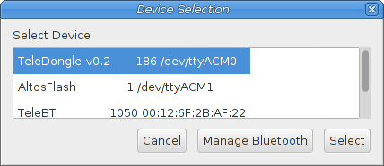
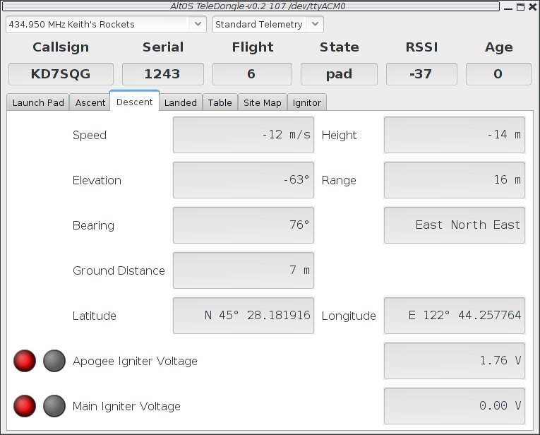
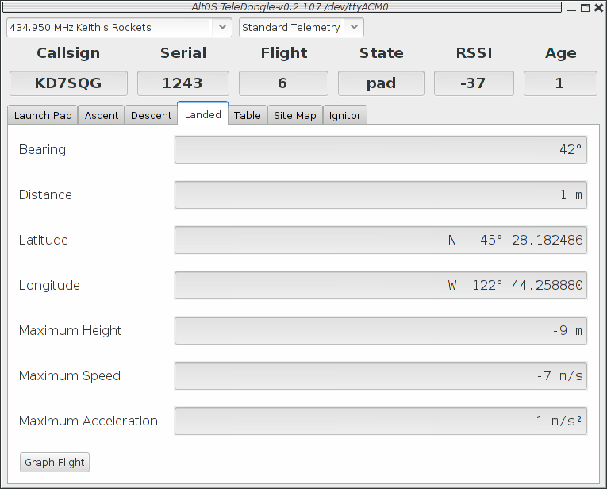
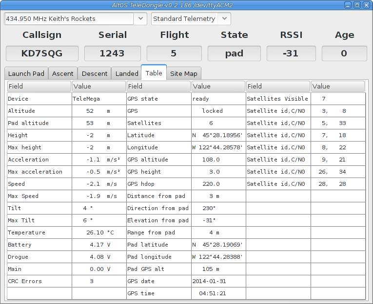
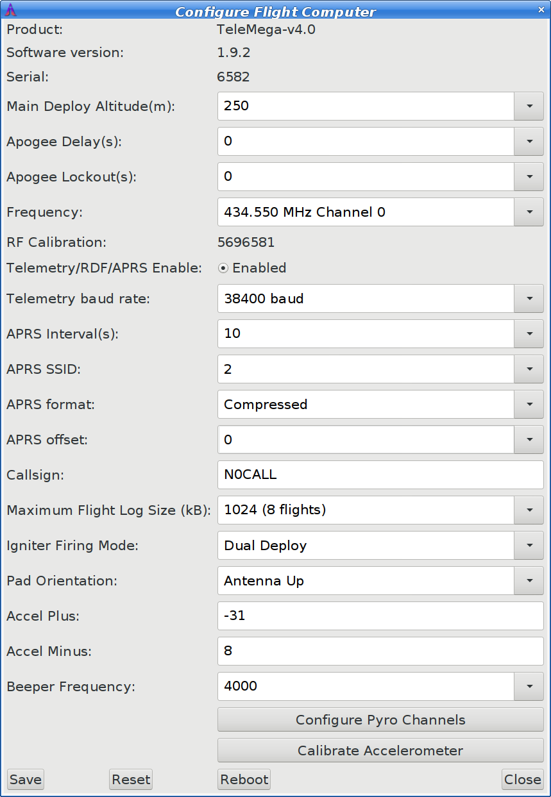

An Owner's Manual for Altus Metrum Rocketry Electronics
Copyright © 2014 Bdale Garbee and Keith Packard
This document is released under the terms of the Creative Commons ShareAlike 3.0 license.
| Revision History | |
|---|---|
| Revision 1.3.2 | 24 January 2014 |
| Bug fixes for TeleMega and AltosUI. | |
| Revision 1.3.1 | 21 January 2014 |
| Bug fixes for TeleMega and TeleMetrum v2.0 along with a few small UI improvements. | |
| Revision 1.3 | 12 November 2013 |
| Updated for software version 1.3. Version 1.3 adds support for TeleMega, TeleMetrum v2.0, TeleMini v2.0 and EasyMini and fixes bugs in AltosUI and the AltOS firmware. | |
| Revision 1.2.1 | 21 May 2013 |
| Updated for software version 1.2. Version 1.2 adds support for TeleBT and AltosDroid. It also adds a few minor features and fixes bugs in AltosUI and the AltOS firmware. | |
| Revision 1.2 | 18 April 2013 |
| Updated for software version 1.2. Version 1.2 adds support for MicroPeak and the MicroPeak USB interface. | |
| Revision 1.1.1 | 16 September 2012 |
| Updated for software version 1.1.1 Version 1.1.1 fixes a few bugs found in version 1.1. | |
| Revision 1.1 | 13 September 2012 |
| Updated for software version 1.1. Version 1.1 has new features but is otherwise compatible with version 1.0. | |
| Revision 1.0 | 24 August 2011 |
| Updated for software version 1.0. Note that 1.0 represents a telemetry format change, meaning both ends of a link (TeleMetrum/TeleMini and TeleDongle) must be updated or communications will fail. | |
| Revision 0.9 | 18 January 2011 |
| Updated for software version 0.9. Note that 0.9 represents a telemetry format change, meaning both ends of a link (TeleMetrum and TeleDongle) must be updated or communications will fail. | |
| Revision 0.8 | 24 November 2010 |
| Updated for software version 0.8 | |
Thanks to Bob Finch, W9YA, NAR 12965, TRA 12350 for writing “The Mere-Mortals Quick Start/Usage Guide to the Altus Metrum Starter Kit” which formed the basis of the original Getting Started chapter in this manual. Bob was one of our first customers for a production TeleMetrum, and his continued enthusiasm and contributions are immensely gratifying and highly appreciated!
And thanks to Anthony (AJ) Towns for major contributions including the AltosUI graphing and site map code and associated documentation. Free software means that our customers and friends can become our collaborators, and we certainly appreciate this level of contribution!
Have fun using these products, and we hope to meet all of you out on the rocket flight line somewhere.
Bdale Garbee, KB0G
NAR #87103, TRA #12201
Keith Packard, KD7SQG
NAR #88757, TRA #12200
Table of Contents
- 1. Introduction and Overview
- 2. Getting Started
- 3. Handling Precautions
- 4. Altus Metrum Hardware
- 5. System Operation
- 6. AltosUI
- 7. AltosDroid
- 8. Using Altus Metrum Products
- 9. Altimeter Installation Recommendations
- 10. Updating Device Firmware
- 11. Hardware Specifications
- 12. FAQ
- A. Notes for Older Software
- B. Drill Templates
- C. Calibration
- D. Release Notes
List of Tables
- 4.1. Altus Metrum Electronics
- 4.2. Altus Metrum Boards
- 4.3. TeleMetrum Screw Terminals
- 4.4. TeleMini v1.0 Connections
- 4.5. TeleMini v2.0 Connections
- 4.6. EasyMini Connections
- 4.7. TeleMega Screw Terminals
- 4.8. Data Storage on Altus Metrum altimeters
- 5.1. AltOS Modes
- 5.2. Pad/Idle Indications
- 5.3. Altus Metrum APRS Comments
Welcome to the Altus Metrum community! Our circuits and software reflect our passion for both hobby rocketry and Free Software. We hope their capabilities and performance will delight you in every way, but by releasing all of our hardware and software designs under open licenses, we also hope to empower you to take as active a role in our collective future as you wish!
The first device created for our community was TeleMetrum, a dual deploy altimeter with fully integrated GPS and radio telemetry as standard features, and a “companion interface” that will support optional capabilities in the future. The latest version of TeleMetrum, v2.0, has all of the same features but with improved sensors and radio to offer increased performance.
Our second device was TeleMini, a dual deploy altimeter with radio telemetry and radio direction finding. The first version of this device was only 13mm by 38mm (½ inch by 1½ inches) and could fit easily in an 18mm air-frame. The latest version, v2.0, includes a beeper, USB data download and extended on-board flight logging, along with an improved barometric sensor.
TeleMega is our most sophisticated device, including six pyro channels (four of which are fully programmable), integrated GPS, integrated gyroscopes for staging/air-start inhibit and high performance telemetry.
EasyMini is a dual-deploy altimeter with logging and built-in USB data download.
TeleDongle was our first ground station, providing a USB to RF interfaces for communicating with the altimeters. Combined with your choice of antenna and notebook computer, TeleDongle and our associated user interface software form a complete ground station capable of logging and displaying in-flight telemetry, aiding rocket recovery, then processing and archiving flight data for analysis and review.
For a slightly more portable ground station experience that also provides direct rocket recovery support, TeleBT offers flight monitoring and data logging using a Bluetooth™ connection between the receiver and an Android device that has the AltosDroid application installed from the Google Play store.
More products will be added to the Altus Metrum family over time, and we currently envision that this will be a single, comprehensive manual for the entire product family.
The first thing to do after you check the inventory of parts in your “starter kit” is to charge the battery.
For TeleMetrum and TeleMega, the battery can be charged by plugging it into the corresponding socket of the device and then using the USB cable to plug the flight computer into your computer's USB socket. The on-board circuitry will charge the battery whenever it is plugged in, because the on-off switch does NOT control the charging circuitry.
On TeleMetrum v1 boards, when the GPS chip is initially searching for satellites, TeleMetrum will consume more current than it pulls from the USB port, so the battery must be attached in order to get satellite lock. Once GPS is locked, the current consumption goes back down enough to enable charging while running. So it's a good idea to fully charge the battery as your first item of business so there is no issue getting and maintaining satellite lock. The yellow charge indicator led will go out when the battery is nearly full and the charger goes to trickle charge. It can take several hours to fully recharge a deeply discharged battery.
TeleMetrum v2.0 and TeleMega use a higher power battery charger, allowing them to charge the battery while running the board at maximum power. When the battery is charging, or when the board is consuming a lot of power, the red LED will be lit. When the battery is fully charged, the green LED will be lit. When the battery is damaged or missing, both LEDs will be lit, which appears yellow.
The Lithium Polymer TeleMini and EasyMini battery can be charged by disconnecting it from the board and plugging it into a standalone battery charger such as the LipoCharger product included in TeleMini Starter Kits, and connecting that via a USB cable to a laptop or other USB power source.
You can also choose to use another battery with TeleMini v2.0 and EasyMini, anything supplying between 4 and 12 volts should work fine (like a standard 9V battery), but if you are planning to fire pyro charges, ground testing is required to verify that the battery supplies enough current to fire your chosen e-matches.
The other active device in the starter kit is the TeleDongle USB to RF interface. If you plug it in to your Mac or Linux computer it should “just work”, showing up as a serial port device. Windows systems need driver information that is part of the AltOS download to know that the existing USB modem driver will work. We therefore recommend installing our software before plugging in TeleDongle if you are using a Windows computer. If you are using an older version of Linux and are having problems, try moving to a fresher kernel (2.6.33 or newer).
Next you should obtain and install the AltOS software. The AltOS distribution includes the AltosUI ground station program, current firmware images for all of the hardware, and a number of standalone utilities that are rarely needed. Pre-built binary packages are available for Linux, Microsoft Windows, and recent MacOSX versions. Full source code and build instructions are also available. The latest version may always be downloaded from http://altusmetrum.org/AltOS.
If you're using a TeleBT instead of the TeleDongle, you'll want to install the AltosDroid application from the Google Play store on an Android device. You don't need a data plan to use AltosDroid, but without network access, the Map view will be less useful as it won't contain any map data. You can also use TeleBT connected over USB with your laptop computer; it acts exactly like a TeleDongle. Anywhere this manual talks about TeleDongle, you can also read that as 'and TeleBT when connected via USB'.
All Altus Metrum products are sophisticated electronic devices. When handled gently and properly installed in an air-frame, they will deliver impressive results. However, as with all electronic devices, there are some precautions you must take.
The Lithium Polymer rechargeable batteries have an extraordinary power density. This is great because we can fly with much less battery mass than if we used alkaline batteries or previous generation rechargeable batteries... but if they are punctured or their leads are allowed to short, they can and will release their energy very rapidly! Thus we recommend that you take some care when handling our batteries and consider giving them some extra protection in your air-frame. We often wrap them in suitable scraps of closed-cell packing foam before strapping them down, for example.
The barometric sensors used on all of our flight computers are sensitive to sunlight. In normal mounting situations, the baro sensor and all of the other surface mount components are “down” towards whatever the underlying mounting surface is, so this is not normally a problem. Please consider this when designing an installation in an air-frame with a see-through plastic payload bay. It is particularly important to consider this with TeleMini v1.0, both because the baro sensor is on the “top” of the board, and because many model rockets with payload bays use clear plastic for the payload bay! Replacing these with an opaque cardboard tube, painting them, or wrapping them with a layer of masking tape are all reasonable approaches to keep the sensor out of direct sunlight.
The barometric sensor sampling port must be able to “breathe”, both by not being covered by foam or tape or other materials that might directly block the hole on the top of the sensor, and also by having a suitable static vent to outside air.
As with all other rocketry electronics, Altus Metrum altimeters must be protected from exposure to corrosive motor exhaust and ejection charge gasses.
Table of Contents
Here are general instructions for hooking up an Altus Metrum flight computer. Instructions specific to each model will be found in the section devoted to that model below.
To prevent electrical interference from affecting the operation of the flight computer, it's important to always twist pairs of wires connected to the board. Twist the switch leads, the pyro leads and the battery leads. This reduces interference through a mechanism called common mode rejection.
All Altus Metrum flight computers have a two pin JST PH series connector to connect up a single-cell Lithium Polymer cell (3.7V nominal). You can purchase matching batteries from the Altus Metrum store, or other vendors, or you can make your own. Pin 1 of the connector is positive, pin 2 is negative. Spark Fun sells a cable with the connector attached, which they call a JST Jumper 2 Wire Assembly.
Many RC vendors also sell lithium polymer batteries with this same connector. All that we have found use the opposite polarity, and if you use them that way, you will damage or destroy the flight computer.
Altus Metrum flight computers always have two screws for each pyro charge. This means you shouldn't need to put two wires into a screw terminal or connect leads from pyro charges together externally.
On the flight computer, one lead from each charge is hooked to the positive battery terminal through the power switch. The other lead is connected through the pyro circuit, which is connected to the negative battery terminal when the pyro circuit is fired.
Altus Metrum flight computers need an external power switch to turn them on. This disconnects both the computer and the pyro charges from the battery, preventing the charges from firing when in the Off position. The switch is in-line with the positive battery terminal.
You can use an active switch circuit, such as the Featherweight Magnetic Switch, with any Altus Metrum flight computer. These require three connections, one to the battery, one to the positive power input on the flight computer and one to ground. Find instructions on how to hook these up for each flight computer below. The follow the instructions that come with your active switch to connect it up.
As mentioned above in the section on hooking up pyro charges, one lead for each of the pyro charges is connected through the power switch directly to the positive battery terminal. The other lead is connected to the pyro circuit, which connects it to the negative battery terminal when the pyro circuit is fired. The pyro circuit on all of the flight computers is designed to handle up to 16V.
To use a separate pyro battery, connect the negative pyro battery terminal to the flight computer ground terminal, the positive battery terminal to the igniter and the other igniter lead to the negative pyro terminal on the flight computer. When the pyro channel fires, it will complete the circuit between the negative pyro terminal and the ground terminal, firing the igniter. Specific instructions on how to hook this up will be found in each section below.
EasyMini and TeleMini v2 are designed to use either a lithium polymer battery or any other battery producing between 4 and 12 volts, such as a rectangular 9V battery. TeleMega and TeleMetrum are not designed for this, and must only be powered by a lithium polymer battery. Find instructions on how to use other batteries in the EasyMini and TeleMini sections below.
Here's the full set of Altus Metrum products, both in production and retired.
Table 4.1. Altus Metrum Electronics
| Device | Barometer | Z-axis accelerometer | GPS | 3D sensors | Storage | RF Output | Battery |
|---|---|---|---|---|---|---|---|
| TeleMetrum v1.0 | MP3H6115 10km (33k') | MMA2202 50g | SkyTraq | - | 1MB | 10mW | 3.7V |
| TeleMetrum v1.1 | MP3H6115 10km (33k') | MMA2202 50g | SkyTraq | - | 2MB | 10mW | 3.7V |
| TeleMetrum v1.2 | MP3H6115 10km (33k') | ADXL78 70g | SkyTraq | - | 2MB | 10mW | 3.7V |
| TeleMetrum v2.0 | MS5607 30km (100k') | MMA6555 102g | uBlox Max-7Q | - | 8MB | 40mW | 3.7V |
TeleMini v1.0 | MP3H6115 10km (33k') | - | - | - | 5kB | 10mW | 3.7V |
| TeleMini v2.0 | MS5607 30km (100k') | - | - | - | 1MB | 10mW | 3.7-12V |
| EasyMini v1.0 | MS5607 30km (100k') | - | - | - | 1MB | - | 3.7-12V |
| TeleMega v1.0 | MS5607 30km (100k') | MMA6555 102g | uBlox Max-7Q | MPU6000 HMC5883 | 8MB | 40mW | 3.7V |
Table 4.2. Altus Metrum Boards
| Device | Connectors | Screw Terminals | Width | Length | Tube Size |
|---|---|---|---|---|---|
| TeleMetrum | Antenna Debug Companion USB Battery | Apogee pyro Main pyro Switch | 1 inch (2.54cm) | 2 ¾ inch (6.99cm) | 29mm coupler |
TeleMini v1.0 | Antenna Debug Battery | Apogee pyro Main pyro | ½ inch (1.27cm) | 1½ inch (3.81cm) | 18mm coupler |
| TeleMini v2.0 | Antenna Debug USB Battery | Apogee pyro Main pyro Battery Switch | 0.8 inch (2.03cm) | 1½ inch (3.81cm) | 24mm coupler |
| EasyMini | Debug USB Battery | Apogee pyro Main pyro Battery Switch | 0.8 inch (2.03cm) | 1½ inch (3.81cm) | 24mm coupler |
| TeleMega | Antenna Debug Companion USB Battery | Apogee pyro Main pyro Pyro A-D Switch Pyro battery | 1¼ inch (3.18cm) | 3¼ inch (8.26cm) | 38mm coupler |
TeleMetrum is a 1 inch by 2¾ inch circuit board. It was designed to fit inside coupler for 29mm air-frame tubing, but using it in a tube that small in diameter may require some creativity in mounting and wiring to succeed! The presence of an accelerometer means TeleMetrum should be aligned along the flight axis of the airframe, and by default the ¼ wave UHF wire antenna should be on the nose-cone end of the board. The antenna wire is about 7 inches long, and wiring for a power switch and the e-matches for apogee and main ejection charges depart from the fin can end of the board, meaning an ideal “simple” avionics bay for TeleMetrum should have at least 10 inches of interior length.
TeleMetrum has six screw terminals on the end of the board opposite the telemetry antenna. Two are for the power switch, and two each for the apogee and main igniter circuits. Using the picture above and starting from the top, the terminals are as follows:
Table 4.3. TeleMetrum Screw Terminals
| Terminal # | Terminal Name | Description |
|---|---|---|
| 1 | Switch Output | Switch connection to flight computer |
| 2 | Switch Input | Switch connection to positive battery terminal |
| 3 | Main + | Main pyro channel common connection to battery + |
| 4 | Main - | Main pyro channel connection to pyro circuit |
| 5 | Apogee + | Apogee pyro channel common connection to battery + |
| 6 | Apogee - | Apogee pyro channel connection to pyro circuit |
As described above, using an external pyro battery involves connecting the negative battery terminal to the flight computer ground, connecting the positive battery terminal to one of the igniter leads and connecting the other igniter lead to the per-channel pyro circuit connection.
To connect the negative battery terminal to the TeleMetrum ground, insert a small piece of wire, 24 to 28 gauge stranded, into the GND hole just above the screw terminal strip and solder it in place.
Connecting the positive battery terminal to the pyro charges must be done separate from TeleMetrum, by soldering them together or using some other connector.
The other lead from each pyro charge is then inserted into the appropriate per-pyro channel screw terminal (terminal 4 for the Main charge, terminal 6 for the Apogee charge).
As explained above, an external active switch requires three connections, one to the positive battery terminal, one to the flight computer positive input and one to ground.
The positive battery terminal is available on screw terminal 2, the positive flight computer input is on terminal 1. To hook a lead to ground, solder a piece of wire, 24 to 28 gauge stranded, to the GND hole just above terminal 1.
 |
TeleMini v1.0 is ½ inches by 1½ inches. It was designed to fit inside an 18mm air-frame tube, but using it in a tube that small in diameter may require some creativity in mounting and wiring to succeed! Since there is no accelerometer, TeleMini can be mounted in any convenient orientation. The default ¼ wave UHF wire antenna attached to the center of one end of the board is about 7 inches long. Two wires for the power switch are connected to holes in the middle of the board. Screw terminals for the e-matches for apogee and main ejection charges depart from the other end of the board, meaning an ideal “simple” avionics bay for TeleMini should have at least 9 inches of interior length.
TeleMini v1.0 has four screw terminals on the end of the board opposite the telemetry antenna. Two are for the apogee and two are for main igniter circuits. There are also wires soldered to the board for the power switch. Using the picture above and starting from the top for the terminals and from the left for the power switch wires, the connections are as follows:
Table 4.4. TeleMini v1.0 Connections
| Terminal # | Terminal Name | Description |
|---|---|---|
| 1 | Apogee - | Apogee pyro channel connection to pyro circuit |
| 2 | Apogee + | Apogee pyro channel common connection to battery + |
| 3 | Main - | Main pyro channel connection to pyro circuit |
| 4 | Main + | Main pyro channel common connection to battery + |
| Left | Switch Output | Switch connection to flight computer |
| Right | Switch Input | Switch connection to positive battery terminal |
As described above, using an external pyro battery involves connecting the negative battery terminal to the flight computer ground, connecting the positive battery terminal to one of the igniter leads and connecting the other igniter lead to the per-channel pyro circuit connection. Because there is no solid ground connection to use on TeleMini, this is not recommended.
The only available ground connection on TeleMini v1.0 are the two mounting holes next to the telemetry antenna. Somehow connect a small piece of wire to one of those holes and hook it to the negative pyro battery terminal.
Connecting the positive battery terminal to the pyro charges must be done separate from TeleMini v1.0, by soldering them together or using some other connector.
The other lead from each pyro charge is then inserted into the appropriate per-pyro channel screw terminal (terminal 3 for the Main charge, terminal 1 for the Apogee charge).
As explained above, an external active switch requires three connections, one to the positive battery terminal, one to the flight computer positive input and one to ground. Again, because TeleMini doesn't have any good ground connection, this is not recommended.
The positive battery terminal is available on the Right power switch wire, the positive flight computer input is on the left power switch wire. Hook a lead to either of the mounting holes for a ground connection.
TeleMini v2.0 is 0.8 inches by 1½ inches. It adds more on-board data logging memory, a built-in USB connector and screw terminals for the battery and power switch. The larger board fits in a 24mm coupler. There's also a battery connector for a LiPo battery if you want to use one of those.
TeleMini v2.0 has two sets of four screw terminals on the end of the board opposite the telemetry antenna. Using the picture above, the top four have connections for the main pyro circuit and an external battery and the bottom four have connections for the apogee pyro circuit and the power switch. Counting from the left, the connections are as follows:
Table 4.5. TeleMini v2.0 Connections
| Terminal # | Terminal Name | Description |
|---|---|---|
| Top 1 | Main - | Main pyro channel connection to pyro circuit |
| Top 2 | Main + | Main pyro channel common connection to battery + |
| Top 3 | Battery + | Positive external battery terminal |
| Top 4 | Battery - | Negative external battery terminal |
| Bottom 1 | Apogee - | Apogee pyro channel connection to pyro circuit |
| Bottom 2 | Apogee + | Apogee pyro channel common connection to battery + |
| Bottom 3 | Switch Output | Switch connection to flight computer |
| Bottom 4 | Switch Input | Switch connection to positive battery terminal |
As described above, using an external pyro battery involves connecting the negative battery terminal to the flight computer ground, connecting the positive battery terminal to one of the igniter leads and connecting the other igniter lead to the per-channel pyro circuit connection.
To connect the negative pyro battery terminal to TeleMini ground, connect it to the negative external battery connection, top terminal 4.
Connecting the positive battery terminal to the pyro charges must be done separate from TeleMini v2.0, by soldering them together or using some other connector.
The other lead from each pyro charge is then inserted into the appropriate per-pyro channel screw terminal (top terminal 1 for the Main charge, bottom terminal 1 for the Apogee charge).
As explained above, an external active switch requires three connections, one to the positive battery terminal, one to the flight computer positive input and one to ground. Use the negative external battery connection, top terminal 4 for ground.
The positive battery terminal is available on bottom terminal 4, the positive flight computer input is on the bottom terminal 3.
 |
EasyMini is built on a 0.8 inch by 1½ inch circuit board. It's designed to fit in a 24mm coupler tube. The connectors and screw terminals match TeleMini v2.0, so you can easily swap between EasyMini and TeleMini.
EasyMini has two sets of four screw terminals on the end of the board opposite the telemetry antenna. Using the picture above, the top four have connections for the main pyro circuit and an external battery and the bottom four have connections for the apogee pyro circuit and the power switch. Counting from the left, the connections are as follows:
Table 4.6. EasyMini Connections
| Terminal # | Terminal Name | Description |
|---|---|---|
| Top 1 | Main - | Main pyro channel connection to pyro circuit |
| Top 2 | Main + | Main pyro channel common connection to battery + |
| Top 3 | Battery + | Positive external battery terminal |
| Top 4 | Battery - | Negative external battery terminal |
| Bottom 1 | Apogee - | Apogee pyro channel connection to pyro circuit |
| Bottom 2 | Apogee + | Apogee pyro channel common connection to battery + |
| Bottom 3 | Switch Output | Switch connection to flight computer |
| Bottom 4 | Switch Input | Switch connection to positive battery terminal |
As described above, using an external pyro battery involves connecting the negative battery terminal to the flight computer ground, connecting the positive battery terminal to one of the igniter leads and connecting the other igniter lead to the per-channel pyro circuit connection.
To connect the negative pyro battery terminal to TeleMini ground, connect it to the negative external battery connection, top terminal 4.
Connecting the positive battery terminal to the pyro charges must be done separate from EasyMini, by soldering them together or using some other connector.
The other lead from each pyro charge is then inserted into the appropriate per-pyro channel screw terminal (top terminal 1 for the Main charge, bottom terminal 1 for the Apogee charge).
As explained above, an external active switch requires three connections, one to the positive battery terminal, one to the flight computer positive input and one to ground. Use the negative external battery connection, top terminal 4 for ground.
The positive battery terminal is available on bottom terminal 4, the positive flight computer input is on the bottom terminal 3.
 |
TeleMega is a 1¼ inch by 3¼ inch circuit board. It was designed to easily fit in a 38mm coupler. Like TeleMetrum, TeleMega has an accelerometer and so it must be mounted so that the board is aligned with the flight axis. It can be mounted either antenna up or down.
TeleMega has two sets of nine screw terminals on the end of the board opposite the telemetry antenna. They are as follows:
Table 4.7. TeleMega Screw Terminals
| Terminal # | Terminal Name | Description |
|---|---|---|
| Top 1 | Switch Input | Switch connection to positive battery terminal |
| Top 2 | Switch Output | Switch connection to flight computer |
| Top 3 | GND | Ground connection for use with external active switch |
| Top 4 | Main - | Main pyro channel connection to pyro circuit |
| Top 5 | Main + | Main pyro channel common connection to battery + |
| Top 6 | Apogee - | Apogee pyro channel connection to pyro circuit |
| Top 7 | Apogee + | Apogee pyro channel common connection to battery + |
| Top 8 | D - | D pyro channel connection to pyro circuit |
| Top 9 | D + | D pyro channel common connection to battery + |
| Bottom 1 | GND | Ground connection for negative pyro battery terminal |
| Bottom 2 | Pyro | Positive pyro battery terminal |
| Bottom 3 | Lipo | Power switch output. Use to connect main battery to pyro battery input |
| Bottom 4 | A - | A pyro channel connection to pyro circuit |
| Bottom 5 | A + | A pyro channel common connection to battery + |
| Bottom 6 | B - | B pyro channel connection to pyro circuit |
| Bottom 7 | B + | B pyro channel common connection to battery + |
| Bottom 8 | C - | C pyro channel connection to pyro circuit |
| Bottom 9 | C + | C pyro channel common connection to battery + |
TeleMega provides explicit support for an external pyro battery. All that is required is to remove the jumper between the lipo terminal (Bottom 3) and the pyro terminal (Bottom 2). Then hook the negative pyro battery terminal to ground (Bottom 1) and the positive pyro battery to the pyro battery input (Bottom 2). You can then use the existing pyro screw terminals to hook up all of the pyro charges.
Because TeleMega has built-in support for a separate pyro battery, if you want to fly with just one battery running both the computer and firing the charges, you need to connect the flight computer battery to the pyro circuit. TeleMega has two screw terminals for this—hook a wire from the Lipo terminal (Bottom 3) to the Pyro terminal (Bottom 2).
As explained above, an external active switch requires three connections, one to the positive battery terminal, one to the flight computer positive input and one to ground.
The positive battery terminal is available on Top terminal 1, the positive flight computer input is on Top terminal 2. Ground is on Top terminal 3.
Each flight computer logs data at 100 samples per second during ascent and 10 samples per second during descent, except for TeleMini v1.0, which records ascent at 10 samples per second and descent at 1 sample per second. Data are logged to an on-board flash memory part, which can be partitioned into several equal-sized blocks, one for each flight.
Table 4.8. Data Storage on Altus Metrum altimeters
| Device | Bytes per Sample | Total Storage | Minutes at Full Rate |
|---|---|---|---|
| TeleMetrum v1.0 | 8 | 1MB | 20 |
| TeleMetrum v1.1 v1.2 | 8 | 2MB | 40 |
| TeleMetrum v2.0 | 16 | 8MB | 80 |
| TeleMini v1.0 | 2 | 5kB | 4 |
| TeleMini v2.0 | 16 | 1MB | 10 |
| EasyMini | 16 | 1MB | 10 |
| TeleMega | 32 | 8MB | 40 |
The on-board flash is partitioned into separate flight logs, each of a fixed maximum size. Increase the maximum size of each log and you reduce the number of flights that can be stored. Decrease the size and you can store more flights.
Configuration data is also stored in the flash memory on TeleMetrum v1.x, TeleMini and EasyMini. This consumes 64kB of flash space. This configuration space is not available for storing flight log data. TeleMetrum v2.0 and TeleMega store configuration data in a bit of eeprom available within the processor chip, leaving that space available in flash for more flight data.
To compute the amount of space needed for a single flight, you can multiply the expected ascent time (in seconds) by 100 times bytes-per-sample, multiply the expected descent time (in seconds) by 10 times the bytes per sample and add the two together. That will slightly under-estimate the storage (in bytes) needed for the flight. For instance, a TeleMetrum v2.0 flight spending 20 seconds in ascent and 150 seconds in descent will take about (20 * 1600) + (150 * 160) = 56000 bytes of storage. You could store dozens of these flights in the on-board flash.
The default size allows for several flights on each flight computer, except for TeleMini v1.0, which only holds data for a single flight. You can adjust the size.
Altus Metrum flight computers will not overwrite existing flight data, so be sure to download flight data and erase it from the flight computer before it fills up. The flight computer will still successfully control the flight even if it cannot log data, so the only thing you will lose is the data.
A typical installation involves attaching only a suitable battery, a single pole switch for power on/off, and two pairs of wires connecting e-matches for the apogee and main ejection charges. All Altus Metrum products are designed for use with single-cell batteries with 3.7 volts nominal. TeleMini v2.0 and EasyMini may also be used with other batteries as long as they supply between 4 and 12 volts.
The battery connectors are a standard 2-pin JST connector and match batteries sold by Spark Fun. These batteries are single-cell Lithium Polymer batteries that nominally provide 3.7 volts. Other vendors sell similar batteries for RC aircraft using mating connectors, however the polarity for those is generally reversed from the batteries used by Altus Metrum products. In particular, the Tenergy batteries supplied for use in Featherweight flight computers are not compatible with Altus Metrum flight computers or battery chargers. Check polarity and voltage before connecting any battery not purchased from Altus Metrum or Spark Fun.
By default, we use the unregulated output of the battery directly to fire ejection charges. This works marvelously with standard low-current e-matches like the J-Tek from MJG Technologies, and with Quest Q2G2 igniters. However, if you want or need to use a separate pyro battery, check out the “External Pyro Battery” section in this manual for instructions on how to wire that up. The altimeters are designed to work with an external pyro battery of no more than 15 volts.
Ejection charges are wired directly to the screw terminal block at the aft end of the altimeter. You'll need a very small straight blade screwdriver for these screws, such as you might find in a jeweler's screwdriver set.
Except for TeleMini v1.0, the flight computers also use the screw terminal block for the power switch leads. On TeleMini v1.0, the power switch leads are soldered directly to the board and can be connected directly to a switch.
For most air-frames, the integrated antennas are more than adequate. However, if you are installing in a carbon-fiber or metal electronics bay which is opaque to RF signals, you may need to use off-board external antennas instead. In this case, you can replace the stock UHF antenna wire with an edge-launched SMA connector, and, on TeleMetrum v1, you can unplug the integrated GPS antenna and select an appropriate off-board GPS antenna with cable terminating in a U.FL connector.
Table of Contents
The AltOS firmware build for the altimeters has two fundamental modes, “idle” and “flight”. Which of these modes the firmware operates in is determined at start up time. For TeleMetrum and TeleMega, which have accelerometers, the mode is controlled by the orientation of the rocket (well, actually the board, of course...) at the time power is switched on. If the rocket is “nose up”, then the flight computer assumes it's on a rail or rod being prepared for launch, so the firmware chooses flight mode. However, if the rocket is more or less horizontal, the firmware instead enters idle mode. Since TeleMini v2.0 and EasyMini don't have an accelerometer we can use to determine orientation, “idle” mode is selected if the board is connected via USB to a computer, otherwise the board enters “flight” mode. TeleMini v1.0 selects “idle” mode if it receives a command packet within the first five seconds of operation.
At power on, you will hear three beeps or see three flashes (“S” in Morse code for start up) and then a pause while the altimeter completes initialization and self test, and decides which mode to enter next.
Here's a short summary of all of the modes and the beeping (or flashing, in the case of TeleMini v1) that accompanies each mode. In the description of the beeping pattern, “dit” means a short beep while "dah" means a long beep (three times as long). “Brap” means a long dissonant tone.
Table 5.1. AltOS Modes
| Mode Name | Abbreviation | Beeps | Description |
|---|---|---|---|
| Startup | S | dit dit dit |
Calibrating sensors, detecting orientation. |
| Idle | I | dit dit |
Ready to accept commands over USB or radio link. |
| Pad | P | dit dah dah dit |
Waiting for launch. Not listening for commands. |
| Boost | B | dah dit dit dit |
Accelerating upwards. |
| Fast | F | dit dit dah dit |
Decelerating, but moving faster than 200m/s. |
| Coast | C | dah dit dah dit |
Decelerating, moving slower than 200m/s |
| Drogue | D | dah dit dit |
Descending after apogee. Above main height. |
| Main | M | dah dah |
Descending. Below main height. |
| Landed | L | dit dah dit dit |
Stable altitude for at least ten seconds. |
| Sensor error | X | dah dit dit dah |
Error detected during sensor calibration. |
In flight or “pad” mode, the altimeter engages the flight state machine, goes into transmit-only mode to send telemetry, and waits for launch to be detected. Flight mode is indicated by an “di-dah-dah-dit” (“P” for pad) on the beeper or lights, followed by beeps or flashes indicating the state of the pyrotechnic igniter continuity. One beep/flash indicates apogee continuity, two beeps/flashes indicate main continuity, three beeps/flashes indicate both apogee and main continuity, and one longer “brap” sound which is made by rapidly alternating between two tones indicates no continuity. For a dual deploy flight, make sure you're getting three beeps or flashes before launching! For apogee-only or motor eject flights, do what makes sense.
If idle mode is entered, you will hear an audible “di-dit” or see two short flashes (“I” for idle), and the flight state machine is disengaged, thus no ejection charges will fire. The altimeters also listen for the radio link when in idle mode for requests sent via TeleDongle. Commands can be issued in idle mode over either USB or the radio link equivalently. TeleMini v1.0 only has the radio link. Idle mode is useful for configuring the altimeter, for extracting data from the on-board storage chip after flight, and for ground testing pyro charges.
In “Idle” and “Pad” modes, once the mode indication beeps/flashes and continuity indication has been sent, if there is no space available to log the flight in on-board memory, the flight computer will emit a warbling tone (much slower than the “no continuity tone”)
Here's a summary of all of the “pad” and “idle” mode indications.
Table 5.2. Pad/Idle Indications
| Name | Beeps | Description |
|---|---|---|
| Neither | brap |
No continuity detected on either apogee or main igniters. |
| Apogee | dit |
Continuity detected only on apogee igniter. |
| Main | dit dit |
Continuity detected only on main igniter. |
| Both | dit dit dit |
Continuity detected on both igniters. |
| Storage Full | warble |
On-board data logging storage is full. This will not prevent the flight computer from safely controlling the flight or transmitting telemetry signals, but no record of the flight will be stored in on-board flash. |
Once landed, the flight computer will signal that by emitting the “Landed” sound described above, after which it will beep out the apogee height (in meters). Each digit is represented by a sequence of short “dit” beeps, with a pause between digits. A zero digit is represented with one long “dah” beep. The flight computer will continue to report landed mode and beep out the maximum height until turned off.
One “neat trick” of particular value when TeleMetrum or TeleMega are used with very large air-frames, is that you can power the board up while the rocket is horizontal, such that it comes up in idle mode. Then you can raise the air-frame to launch position, and issue a 'reset' command via TeleDongle over the radio link to cause the altimeter to reboot and come up in flight mode. This is much safer than standing on the top step of a rickety step-ladder or hanging off the side of a launch tower with a screw-driver trying to turn on your avionics before installing igniters!
TeleMini v1.0 is configured solely via the radio link. Of course, that means you need to know the TeleMini radio configuration values or you won't be able to communicate with it. For situations when you don't have the radio configuration values, TeleMini v1.0 offers an 'emergency recovery' mode. In this mode, TeleMini is configured as follows:
Sets the radio frequency to 434.550MHz
Sets the radio calibration back to the factory value.
Sets the callsign to N0CALL
Does not go to 'pad' mode after five seconds.
To get into 'emergency recovery' mode, first find the row of four small holes opposite the switch wiring. Using a short piece of small gauge wire, connect the outer two holes together, then power TeleMini up. Once the red LED is lit, disconnect the wire and the board should signal that it's in 'idle' mode after the initial five second startup period.
TeleMetrum and TeleMega include a complete GPS receiver. A complete explanation of how GPS works is beyond the scope of this manual, but the bottom line is that the GPS receiver needs to lock onto at least four satellites to obtain a solid 3 dimensional position fix and know what time it is.
The flight computers provide backup power to the GPS chip any time a battery is connected. This allows the receiver to “warm start” on the launch rail much faster than if every power-on were a GPS “cold start”. In typical operations, powering up on the flight line in idle mode while performing final air-frame preparation will be sufficient to allow the GPS receiver to cold start and acquire lock. Then the board can be powered down during RSO review and installation on a launch rod or rail. When the board is turned back on, the GPS system should lock very quickly, typically long before igniter installation and return to the flight line are complete.
One of the unique features of the Altus Metrum system is the ability to create a two way command link between TeleDongle and an altimeter using the digital radio transceivers built into each device. This allows you to interact with the altimeter from afar, as if it were directly connected to the computer.
Any operation which can be performed with a flight computer can either be done with the device directly connected to the computer via the USB cable, or through the radio link. TeleMini v1.0 doesn't provide a USB connector and so it is always communicated with over radio. Select the appropriate TeleDongle device when the list of devices is presented and AltosUI will interact with an altimeter over the radio link.
One oddity in the current interface is how AltosUI selects the frequency for radio communications. Instead of providing an interface to specifically configure the frequency, it uses whatever frequency was most recently selected for the target TeleDongle device in Monitor Flight mode. If you haven't ever used that mode with the TeleDongle in question, select the Monitor Flight button from the top level UI, and pick the appropriate TeleDongle device. Once the flight monitoring window is open, select the desired frequency and then close it down again. All radio communications will now use that frequency.
Save Flight Data—Recover flight data from the rocket without opening it up.
Configure altimeter apogee delays, main deploy heights and additional pyro event conditions to respond to changing launch conditions. You can also 'reboot' the altimeter. Use this to remotely enable the flight computer by turning TeleMetrum or TeleMega on in “idle” mode, then once the air-frame is oriented for launch, you can reboot the altimeter and have it restart in pad mode without having to climb the scary ladder.
Fire Igniters—Test your deployment charges without snaking wires out through holes in the air-frame. Simply assemble the rocket as if for flight with the apogee and main charges loaded, then remotely command the altimeter to fire the igniters.
Operation over the radio link for configuring an altimeter, ground testing igniters, and so forth uses the same RF frequencies as flight telemetry. To configure the desired TeleDongle frequency, select the monitor flight tab, then use the frequency selector and close the window before performing other desired radio operations.
The flight computers only enable radio commanding in 'idle' mode. TeleMetrum and TeleMega use the accelerometer to detect which orientation they start up in, so make sure you have the flight computer lying horizontally when you turn it on. Otherwise, it will start in 'pad' mode ready for flight, and will not be listening for command packets from TeleDongle.
TeleMini listens for a command packet for five seconds after first being turned on, if it doesn't hear anything, it enters 'pad' mode, ready for flight and will no longer listen for command packets. The easiest way to connect to TeleMini is to initiate the command and select the TeleDongle device. At this point, the TeleDongle will be attempting to communicate with the TeleMini. Now turn TeleMini on, and it should immediately start communicating with the TeleDongle and the desired operation can be performed.
You can monitor the operation of the radio link by watching the lights on the devices. The red LED will flash each time a packet is transmitted, while the green LED will light up on TeleDongle when it is waiting to receive a packet from the altimeter.
An important aspect of preparing a rocket using electronic deployment for flight is ground testing the recovery system. Thanks to the bi-directional radio link central to the Altus Metrum system, this can be accomplished in a TeleMega, TeleMetrum or TeleMini equipped rocket with less work than you may be accustomed to with other systems. It can even be fun!
Just prep the rocket for flight, then power up the altimeter in “idle” mode (placing air-frame horizontal for TeleMetrum or TeleMega, or selecting the Configure Altimeter tab for TeleMini). This will cause the firmware to go into “idle” mode, in which the normal flight state machine is disabled and charges will not fire without manual command. You can now command the altimeter to fire the apogee or main charges from a safe distance using your computer and TeleDongle and the Fire Igniter tab to complete ejection testing.
Our flight computers all incorporate an RF transceiver, but it's not a full duplex system... each end can only be transmitting or receiving at any given moment. So we had to decide how to manage the link.
By design, the altimeter firmware listens for the radio link when it's in “idle mode”, which allows us to use the radio link to configure the rocket, do things like ejection tests, and extract data after a flight without having to crack open the air-frame. However, when the board is in “flight mode”, the altimeter only transmits and doesn't listen at all. That's because we want to put ultimate priority on event detection and getting telemetry out of the rocket through the radio in case the rocket crashes and we aren't able to extract data later...
We don't generally use a 'normal packet radio' mode like APRS because they're just too inefficient. The GFSK modulation we use is FSK with the base-band pulses passed through a Gaussian filter before they go into the modulator to limit the transmitted bandwidth. When combined with forward error correction and interleaving, this allows us to have a very robust 19.2 kilobit data link with only 10-40 milliwatts of transmit power, a whip antenna in the rocket, and a hand-held Yagi on the ground. We've had flights to above 21k feet AGL with great reception, and calculations suggest we should be good to well over 40k feet AGL with a 5-element yagi on the ground with our 10mW units and over 100k feet AGL with the 40mW devices. We hope to fly boards to higher altitudes over time, and would of course appreciate customer feedback on performance in higher altitude flights!
TeleMetrum v2.0 and TeleMega can send APRS if desired, and the interval between APRS packets can be configured. As each APRS packet takes a full second to transmit, we recommend an interval of at least 5 seconds to avoid consuming too much battery power or radio channel bandwidth. You can configure the APRS interval using AltosUI; that process is described in the Configure Altimeter section of the AltosUI chapter.
AltOS uses the APRS compressed position report data format, which provides for higher position precision and shorter packets than the original APRS format. It also includes altitude data, which is invaluable when tracking rockets. We haven't found a receiver which doesn't handle compressed positions, but it's just possible that you have one, so if you have an older device that can receive the raw packets but isn't displaying position information, it's possible that this is the cause.
The APRS packet format includes a comment field that can have arbitrary text in it. AltOS uses this to send status information about the flight computer. It sends four fields as shown in the following table.
Table 5.3. Altus Metrum APRS Comments
| Field | Example | Description |
|---|---|---|
| 1 | L | GPS Status U for unlocked, L for locked |
| 2 | 6 | Number of Satellites in View |
| 3 | B4.0 | Altimeter Battery Voltage |
| 4 | A3.7 | Apogee Igniter Voltage |
| 5 | M3.7 | Main Igniter Voltage |
Here's an example of an APRS comment showing GPS lock with 6 satellites in view, a primary battery at 4.0V, and apogee and main igniters both at 3.7V.
L6 B4.0 A3.7 M3.7
Make sure your primary battery is above 3.8V, any connected igniters are above 3.5V and GPS is locked with at least 5 or 6 satellites in view before flying. If GPS is switching between L and U regularly, then it doesn't have a good lock and you should wait until it becomes stable.
If the GPS receiver loses lock, the APRS data transmitted will contain the last position for which GPS lock was available. You can tell that this has happened by noticing that the GPS status character switches from 'L' to 'U'. Before GPS has locked, APRS will transmit zero for latitude, longitude and altitude.
Configuring an Altus Metrum altimeter for flight is very simple. Even on our baro-only TeleMini and EasyMini boards, the use of a Kalman filter means there is no need to set a “mach delay”. The few configurable parameters can all be set using AltosUI over USB or or radio link via TeleDongle. Read the Configure Altimeter section in the AltosUI chapter below for more information.
Altus Metrum boards support radio frequencies in the 70cm band. By default, the configuration interface provides a list of 10 “standard” frequencies in 100kHz channels starting at 434.550MHz. However, the firmware supports use of any 50kHz multiple within the 70cm band. At any given launch, we highly recommend coordinating when and by whom each frequency will be used to avoid interference. And of course, both altimeter and TeleDongle must be configured to the same frequency to successfully communicate with each other.
This sets the callsign used for telemetry, APRS and the packet link. For telemetry and APRS, this is used to identify the device. For the packet link, the callsign must match that configured in AltosUI or the link will not work. This is to prevent accidental configuration of another Altus Metrum flight computer operating on the same frequency nearby.
You can completely disable the radio while in flight, if necessary. This doesn't disable the packet link in idle mode.
This selects how often APRS packets are transmitted. Set this to zero to disable APRS without also disabling the regular telemetry and RDF transmissions. As APRS takes a full second to transmit a single position report, we recommend sending packets no more than once every 5 seconds.
Apogee delay is the number of seconds after the altimeter detects flight apogee that the drogue charge should be fired. In most cases, this should be left at the default of 0. However, if you are flying redundant electronics such as for an L3 certification, you may wish to set one of your altimeters to a positive delay so that both primary and backup pyrotechnic charges do not fire simultaneously.
The Altus Metrum apogee detection algorithm fires exactly at apogee. If you are also flying an altimeter like the PerfectFlite MAWD, which only supports selecting 0 or 1 seconds of apogee delay, you may wish to set the MAWD to 0 seconds delay and set the TeleMetrum to fire your backup 2 or 3 seconds later to avoid any chance of both charges firing simultaneously. We've flown several air-frames this way quite happily, including Keith's successful L3 cert.
By default, the altimeter will fire the main deployment charge at an elevation of 250 meters (about 820 feet) above ground. We think this is a good elevation for most air-frames, but feel free to change this to suit. In particular, if you are flying two altimeters, you may wish to set the deployment elevation for the backup altimeter to be something lower than the primary so that both pyrotechnic charges don't fire simultaneously.
Changing this value will set the maximum amount of flight log storage that an individual flight will use. The available storage is divided into as many flights of the specified size as can fit in the available space. You can download and erase individual flight logs. If you fill up the available storage, future flights will not get logged until you erase some of the stored ones.
Even though our flight computers (except TeleMini v1.0) can store multiple flights, we strongly recommend downloading and saving flight data after each flight.
Instead of firing one charge at apogee and another charge at a fixed height above the ground, you can configure the altimeter to fire both at apogee or both during descent. This was added to support an airframe Bdale designed that had two altimeters, one in the fin can and one in the nose.
Providing the ability to use both igniters for apogee or main allows some level of redundancy without needing two flight computers. In Redundant Apogee or Redundant Main mode, the two charges will be fired two seconds apart.
TeleMetrum and TeleMega measure acceleration along the axis of the board. Which way the board is oriented affects the sign of the acceleration value. Instead of trying to guess which way the board is mounted in the air frame, the altimeter must be explicitly configured for either Antenna Up or Antenna Down. The default, Antenna Up, expects the end of the board connected to the 70cm antenna to be nearest the nose of the rocket, with the end containing the screw terminals nearest the tail.
In addition to the usual Apogee and Main pyro channels, TeleMega has four additional channels that can be configured to activate when various flight conditions are satisfied. You can select as many conditions as necessary; all of them must be met in order to activate the channel. The conditions available are:
Acceleration away from the ground. Select a value, and then choose whether acceleration should be above or below that value. Acceleration is positive upwards, so accelerating towards the ground would produce negative numbers. Acceleration during descent is noisy and inaccurate, so be careful when using it during these phases of the flight.
Vertical speed. Select a value, and then choose whether vertical speed should be above or below that value. Speed is positive upwards, so moving towards the ground would produce negative numbers. Speed during descent is a bit noisy and so be careful when using it during these phases of the flight.
Height. Select a value, and then choose whether the height above the launch pad should be above or below that value.
Orientation. TeleMega contains a 3-axis gyroscope and accelerometer which is used to measure the current angle. Note that this angle is not the change in angle from the launch pad, but rather absolute relative to gravity; the 3-axis accelerometer is used to compute the angle of the rocket on the launch pad and initialize the system. Because this value is computed by integrating rate gyros, it gets progressively less accurate as the flight goes on. It should have an accumulated error of less than 0.2°/second (after 10 seconds of flight, the error should be less than 2°).
The usual use of the orientation configuration is to ensure that the rocket is traveling mostly upwards when deciding whether to ignite air starts or additional stages. For that, choose a reasonable maximum angle (like 20°) and set the motor igniter to require an angle of less than that value.
Flight Time. Time since boost was detected. Select a value and choose whether to activate the pyro channel before or after that amount of time.
Ascending. A simple test saying whether the rocket is going up or not. This is exactly equivalent to testing whether the speed is > 0.
Descending. A simple test saying whether the rocket is going down or not. This is exactly equivalent to testing whether the speed is < 0.
After Motor. The flight software counts each time the rocket starts accelerating (presumably due to a motor or motors igniting). Use this value to count ignitions for multi-staged or multi-airstart launches.
Delay. This value doesn't perform any checks, instead it inserts a delay between the time when the other parameters become true and when the pyro channel is activated.
Flight State. The flight software tracks the flight through a sequence of states:
Boost. The motor has lit and the rocket is accelerating upwards.
Fast. The motor has burned out and the rocket is decelerating, but it is going faster than 200m/s.
Coast. The rocket is still moving upwards and decelerating, but the speed is less than 200m/s.
Drogue. The rocket has reached apogee and is heading back down, but is above the configured Main altitude.
Main. The rocket is still descending, and is below the Main altitude
Landed. The rocket is no longer moving.
You can select a state to limit when the pyro channel may activate; note that the check is based on when the rocket transitions into the state, and so checking for “greater than Boost” means that the rocket is currently in boost or some later state.
When a motor burns out, the rocket enters either Fast or Coast state (depending on how fast it is moving). If the computer detects upwards acceleration again, it will move back to Boost state.
Table of Contents
 |
The AltosUI program provides a graphical user interface for interacting with the Altus Metrum product family. AltosUI can monitor telemetry data, configure devices and many other tasks. The primary interface window provides a selection of buttons, one for each major activity in the system. This chapter is split into sections, each of which documents one of the tasks provided from the top-level toolbar.
Selecting this item brings up a dialog box listing all of the connected TeleDongle devices. When you choose one of these, AltosUI will create a window to display telemetry data as received by the selected TeleDongle device.
|  |
All telemetry data received are automatically recorded in suitable log files. The name of the files includes the current date and rocket serial and flight numbers.
The radio frequency being monitored by the TeleDongle device is displayed at the top of the window. You can configure the frequency by clicking on the frequency box and selecting the desired frequency. AltosUI remembers the last frequency selected for each TeleDongle and selects that automatically the next time you use that device.
Below the TeleDongle frequency selector, the window contains a few significant pieces of information about the altimeter providing the telemetry data stream:
The configured call-sign
The device serial number
The flight number. Each altimeter remembers how many times it has flown.
The rocket flight state. Each flight passes through several states including Pad, Boost, Fast, Coast, Drogue, Main and Landed.
The Received Signal Strength Indicator value. This lets you know how strong a signal TeleDongle is receiving. The radio inside TeleDongle operates down to about -99dBm; weaker signals may not be receivable. The packet link uses error detection and correction techniques which prevent incorrect data from being reported.
The age of the displayed data, in seconds since the last successfully received telemetry packet. In normal operation this will stay in the low single digits. If the number starts counting up, then you are no longer receiving data over the radio link from the flight computer.
Finally, the largest portion of the window contains a set of tabs, each of which contain some information about the rocket. They're arranged in 'flight order' so that as the flight progresses, the selected tab automatically switches to display data relevant to the current state of the flight. You can select other tabs at any time. The final 'table' tab displays all of the raw telemetry values in one place in a spreadsheet-like format.
 |
The 'Launch Pad' tab shows information used to decide when the rocket is ready for flight. The first elements include red/green indicators, if any of these is red, you'll want to evaluate whether the rocket is ready to launch:
- Battery Voltage
This indicates whether the Li-Po battery powering the flight computer has sufficient charge to last for the duration of the flight. A value of more than 3.8V is required for a 'GO' status.
- Apogee Igniter Voltage
This indicates whether the apogee igniter has continuity. If the igniter has a low resistance, then the voltage measured here will be close to the Li-Po battery voltage. A value greater than 3.2V is required for a 'GO' status.
- Main Igniter Voltage
This indicates whether the main igniter has continuity. If the igniter has a low resistance, then the voltage measured here will be close to the Li-Po battery voltage. A value greater than 3.2V is required for a 'GO' status.
- On-board Data Logging
This indicates whether there is space remaining on-board to store flight data for the upcoming flight. If you've downloaded data, but failed to erase flights, there may not be any space left. Most of our flight computers can store multiple flights, depending on the configured maximum flight log size. TeleMini v1.0 stores only a single flight, so it will need to be downloaded and erased after each flight to capture data. This only affects on-board flight logging; the altimeter will still transmit telemetry and fire ejection charges at the proper times even if the flight data storage is full.
- GPS Locked
For a TeleMetrum or TeleMega device, this indicates whether the GPS receiver is currently able to compute position information. GPS requires at least 4 satellites to compute an accurate position.
- GPS Ready
For a TeleMetrum or TeleMega device, this indicates whether GPS has reported at least 10 consecutive positions without losing lock. This ensures that the GPS receiver has reliable reception from the satellites.
The Launchpad tab also shows the computed launch pad position and altitude, averaging many reported positions to improve the accuracy of the fix.
 |
This tab is shown during Boost, Fast and Coast phases. The information displayed here helps monitor the rocket as it heads towards apogee.
The height, speed, acceleration and tilt are shown along with the maximum values for each of them. This allows you to quickly answer the most commonly asked questions you'll hear during flight.
The current latitude and longitude reported by the GPS are also shown. Note that under high acceleration, these values may not get updated as the GPS receiver loses position fix. Once the rocket starts coasting, the receiver should start reporting position again.
Finally, the current igniter voltages are reported as in the Launch Pad tab. This can help diagnose deployment failures caused by wiring which comes loose under high acceleration.
|  |
Once the rocket has reached apogee and (we hope) activated the apogee charge, attention switches to tracking the rocket on the way back to the ground, and for dual-deploy flights, waiting for the main charge to fire.
To monitor whether the apogee charge operated correctly, the current descent rate is reported along with the current height. Good descent rates vary based on the choice of recovery components, but generally range from 15-30m/s on drogue and should be below 10m/s when under the main parachute in a dual-deploy flight.
With GPS-equipped flight computers, you can locate the rocket in the sky using the elevation and bearing information to figure out where to look. Elevation is in degrees above the horizon. Bearing is reported in degrees relative to true north. Range can help figure out how big the rocket will appear. Ground Distance shows how far it is to a point directly under the rocket and can help figure out where the rocket is likely to land. Note that all of these values are relative to the pad location. If the elevation is near 90°, the rocket is over the pad, not over you.
Finally, the igniter voltages are reported in this tab as well, both to monitor the main charge as well as to see what the status of the apogee charge is. Note that some commercial e-matches are designed to retain continuity even after being fired, and will continue to show as green or return from red to green after firing.
|  |
Once the rocket is on the ground, attention switches to recovery. While the radio signal is often lost once the rocket is on the ground, the last reported GPS position is generally within a short distance of the actual landing location.
The last reported GPS position is reported both by latitude and longitude as well as a bearing and distance from the launch pad. The distance should give you a good idea of whether to walk or hitch a ride. Take the reported latitude and longitude and enter them into your hand-held GPS unit and have that compute a track to the landing location.
Our flight computers will continue to transmit RDF tones after landing, allowing you to locate the rocket by following the radio signal if necessary. You may need to get away from the clutter of the flight line, or even get up on a hill (or your neighbor's RV roof) to receive the RDF signal.
The maximum height, speed and acceleration reported during the flight are displayed for your admiring observers. The accuracy of these immediate values depends on the quality of your radio link and how many packets were received. Recovering the on-board data after flight may yield more precise results.
To get more detailed information about the flight, you can click on the 'Graph Flight' button which will bring up a graph window for the current flight.
|  |
The table view shows all of the data available from the flight computer. Probably the most useful data on this tab is the detailed GPS information, which includes horizontal dilution of precision information, and information about the signal being received from the satellites.
 |
When the TeleMetrum has a GPS fix, the Site Map tab will map the rocket's position to make it easier for you to locate the rocket, both while it is in the air, and when it has landed. The rocket's state is indicated by color: white for pad, red for boost, pink for fast, yellow for coast, light blue for drogue, dark blue for main, and black for landed.
The map's scale is approximately 3m (10ft) per pixel. The map can be dragged using the left mouse button. The map will attempt to keep the rocket roughly centered while data is being received.
Images are fetched automatically via the Google Maps Static API, and cached on disk for reuse. If map images cannot be downloaded, the rocket's path will be traced on a dark gray background instead.
You can pre-load images for your favorite launch sites before you leave home; check out the 'Preload Maps' section below.
The altimeter records flight data to its internal flash memory. TeleMetrum data is recorded at a much higher rate than the telemetry system can handle, and is not subject to radio drop-outs. As such, it provides a more complete and precise record of the flight. The 'Save Flight Data' button allows you to read the flash memory and write it to disk.
Clicking on the 'Save Flight Data' button brings up a list of connected flight computers and TeleDongle devices. If you select a flight computer, the flight data will be downloaded from that device directly. If you select a TeleDongle device, flight data will be downloaded from a flight computer over radio link via the specified TeleDongle. See the chapter on Controlling An Altimeter Over The Radio Link for more information.
After the device has been selected, a dialog showing the flight data saved in the device will be shown allowing you to select which flights to download and which to delete. With version 0.9 or newer firmware, you must erase flights in order for the space they consume to be reused by another flight. This prevents accidentally losing flight data if you neglect to download data before flying again. Note that if there is no more space available in the device, then no data will be recorded during the next flight.
The file name for each flight log is computed automatically from the recorded flight date, altimeter serial number and flight number information.
Select this button and you are prompted to select a flight record file, either a .telem file recording telemetry data or a .eeprom file containing flight data saved from the altimeter flash memory.
Once a flight record is selected, the flight monitor interface is displayed and the flight is re-enacted in real time. Check the Monitor Flight chapter above to learn how this window operates.
Select this button and you are prompted to select a flight record file, either a .telem file recording telemetry data or a .eeprom file containing flight data saved from flash memory.
Note that telemetry files will generally produce poor graphs due to the lower sampling rate and missed telemetry packets. Use saved flight data in .eeprom files for graphing where possible.
Once a flight record is selected, a window with multiple tabs is opened.
 |
By default, the graph contains acceleration (blue), velocity (green) and altitude (red).
The graph can be zoomed into a particular area by clicking and dragging down and to the right. Once zoomed, the graph can be reset by clicking and dragging up and to the left. Holding down control and clicking and dragging allows the graph to be panned. The right mouse button causes a pop-up menu to be displayed, giving you the option save or print the plot.
 |
This selects which graph elements to show, and, at the very bottom, lets you switch between metric and imperial units


This tool takes the raw data files and makes them available for external analysis. When you select this button, you are prompted to select a flight data file, which can be either a .eeprom or .telem. The .eeprom files contain higher resolution and more continuous data, while .telem files contain receiver signal strength information. Next, a second dialog appears which is used to select where to write the resulting file. It has a selector to choose between CSV and KML file formats.
This is a text file containing the data in a form suitable for import into a spreadsheet or other external data analysis tool. The first few lines of the file contain the version and configuration information from the altimeter, then there is a single header line which labels all of the fields. All of these lines start with a '#' character which many tools can be configured to skip over.
The remaining lines of the file contain the data, with each field separated by a comma and at least one space. All of the sensor values are converted to standard units, with the barometric data reported in both pressure, altitude and height above pad units.
|  |
Select this button and then select either an altimeter or TeleDongle Device from the list provided. Selecting a TeleDongle device will use the radio link to configure a remote altimeter.
The first few lines of the dialog provide information about the connected device, including the product name, software version and hardware serial number. Below that are the individual configuration entries.
At the bottom of the dialog, there are four buttons:
- Save
This writes any changes to the configuration parameter block in flash memory. If you don't press this button, any changes you make will be lost.
- Reset
This resets the dialog to the most recently saved values, erasing any changes you have made.
- Reboot
This reboots the device. Use this to switch from idle to pad mode by rebooting once the rocket is oriented for flight, or to confirm changes you think you saved are really saved.
- Close
This closes the dialog. Any unsaved changes will be lost.
The rest of the dialog contains the parameters to be configured.
This sets the altitude (above the recorded pad altitude) at which the 'main' igniter will fire. The drop-down menu shows some common values, but you can edit the text directly and choose whatever you like. If the apogee charge fires below this altitude, then the main charge will fire two seconds after the apogee charge fires.
When flying redundant electronics, it's often important to ensure that multiple apogee charges don't fire at precisely the same time, as that can over pressurize the apogee deployment bay and cause a structural failure of the air-frame. The Apogee Delay parameter tells the flight computer to fire the apogee charge a certain number of seconds after apogee has been detected.
This configures which of the frequencies to use for both telemetry and packet command mode. Note that if you set this value via packet command mode, the TeleDongle frequency will also be automatically reconfigured to match so that communication will continue afterwards.
The radios in every Altus Metrum device are calibrated at the factory to ensure that they transmit and receive on the specified frequency. If you need to you can adjust the calibration by changing this value. Do not do this without understanding what the value means, read the appendix on calibration and/or the source code for more information. To change a TeleDongle's calibration, you must reprogram the unit completely.
Enables the radio for transmission during flight. When disabled, the radio will not transmit anything during flight at all.
How often to transmit GPS information via APRS (in seconds). When set to zero, APRS transmission is disabled. This option is available on TeleMetrum v2 and TeleMega boards. TeleMetrum v1 boards cannot transmit APRS packets. Note that a single APRS packet takes nearly a full second to transmit, so enabling this option will prevent sending any other telemetry during that time.
This sets the call sign included in each telemetry packet. Set this as needed to conform to your local radio regulations.
This sets the space (in kilobytes) allocated for each flight log. The available space will be divided into chunks of this size. A smaller value will allow more flights to be stored, a larger value will record data from longer flights.
TeleMetrum and TeleMini provide two igniter channels as they were originally designed as dual-deploy flight computers. This configuration parameter allows the two channels to be used in different configurations.
- Dual Deploy
This is the usual mode of operation; the 'apogee' channel is fired at apogee and the 'main' channel at the height above ground specified by the 'Main Deploy Altitude' during descent.
- Redundant Apogee
This fires both channels at apogee, the 'apogee' channel first followed after a two second delay by the 'main' channel.
- Redundant Main
This fires both channels at the height above ground specified by the Main Deploy Altitude setting during descent. The 'apogee' channel is fired first, followed after a two second delay by the 'main' channel.
Because they include accelerometers, TeleMetrum and TeleMega are sensitive to the orientation of the board. By default, they expect the antenna end to point forward. This parameter allows that default to be changed, permitting the board to be mounted with the antenna pointing aft instead.
- Antenna Up
In this mode, the antenna end of the flight computer must point forward, in line with the expected flight path.
- Antenna Down
In this mode, the antenna end of the flight computer must point aft, in line with the expected flight path.
 |
This opens a separate window to configure the additional pyro channels available on TeleMega. One column is presented for each channel. Each row represents a single parameter, if enabled the parameter must meet the specified test for the pyro channel to be fired. See the Pyro Channels section in the System Operation chapter above for a description of these parameters.
Select conditions and set the related value; the pyro channel will be activated when all of the conditions are met. Each pyro channel has a separate set of configuration values, so you can use different values for the same condition with different channels.
Once you have selected the appropriate configuration for all of the necessary pyro channels, you can save the pyro configuration along with the rest of the flight computer configuration by pressing the 'Save' button in the main Configure Flight Computer window.
 |
This button presents a dialog so that you can configure the AltosUI global settings.
AltosUI provides voice announcements during flight so that you can keep your eyes on the sky and still get information about the current flight status. However, sometimes you don't want to hear them.
- Enable
Turns all voice announcements on and off
- Test Voice
Plays a short message allowing you to verify that the audio system is working and the volume settings are reasonable
AltosUI logs all telemetry data and saves all TeleMetrum flash data to this directory. This directory is also used as the staring point when selecting data files for display or export.
Click on the directory name to bring up a directory choosing dialog, select a new directory and click 'Select Directory' to change where AltosUI reads and writes data files.
This value is transmitted in each command packet sent from TeleDongle and received from an altimeter. It is not used in telemetry mode, as the callsign configured in the altimeter board is included in all telemetry packets. Configure this with the AltosUI operators call sign as needed to comply with your local radio regulations.
Note that to successfully command a flight computer over the radio (to configure the altimeter, monitor idle, or fire pyro charges), the callsign configured here must exactly match the callsign configured in the flight computer. This matching is case sensitive.
This switches between metric units (meters) and imperial units (feet and miles). This affects the display of values use during flight monitoring, configuration, data graphing and all of the voice announcements. It does not change the units used when exporting to CSV files, those are always produced in metric units.
Selects the set of fonts used in the flight monitor window. Choose between the small, medium and large sets.
This causes all communication with a connected device to be dumped to the console from which AltosUI was started. If you've started it from an icon or menu entry, the output will simply be discarded. This mode can be useful to debug various serial communication issues.
This brings up a dialog where you can configure the set of frequencies shown in the various frequency menus. You can add as many as you like, or even reconfigure the default set. Changing this list does not affect the frequency settings of any devices, it only changes the set of frequencies shown in the menus.
Select this button and then select a TeleDongle Device from the list provided.
The first few lines of the dialog provide information about the connected device, including the product name, software version and hardware serial number. Below that are the individual configuration entries.
Note that the TeleDongle itself doesn't save any configuration data, the settings here are recorded on the local machine in the Java preferences database. Moving the TeleDongle to another machine, or using a different user account on the same machine will cause settings made here to have no effect.
At the bottom of the dialog, there are three buttons:
- Save
This writes any changes to the local Java preferences file. If you don't press this button, any changes you make will be lost.
- Reset
This resets the dialog to the most recently saved values, erasing any changes you have made.
- Close
This closes the dialog. Any unsaved changes will be lost.
The rest of the dialog contains the parameters to be configured.
This configures the frequency to use for both telemetry and packet command mode. Set this before starting any operation involving packet command mode so that it will use the right frequency. Telemetry monitoring mode also provides a menu to change the frequency, and that menu also sets the same Java preference value used here.
The radios in every Altus Metrum device are calibrated at the factory to ensure that they transmit and receive on the specified frequency. To change a TeleDongle's calibration, you must reprogram the unit completely, so this entry simply shows the current value and doesn't allow any changes.
This reprograms Altus Metrum devices with new firmware. TeleMetrum v1.x, TeleDongle, TeleMini and TeleBT are all reprogrammed by using another similar unit as a programming dongle (pair programming). TeleMega, TeleMetrum v2 and EasyMini are all programmed directly over their USB ports (self programming). Please read the directions for flashing devices in the Updating Device Firmware chapter below.
 |
This activates the igniter circuits in the flight computer to help test recovery systems deployment. Because this command can operate over the Packet Command Link, you can prepare the rocket as for flight and then test the recovery system without needing to snake wires inside the air-frame.
Selecting the 'Fire Igniter' button brings up the usual device selection dialog. Pick the desired device. This brings up another window which shows the current continuity test status for all of the pyro channels.
Next, select the desired igniter to fire. This will enable the 'Arm' button.
Select the 'Arm' button. This enables the 'Fire' button. The word 'Arm' is replaced by a countdown timer indicating that you have 10 seconds to press the 'Fire' button or the system will deactivate, at which point you start over again at selecting the desired igniter.
 |
This listens for telemetry packets on all of the configured frequencies, displaying information about each device it receives a packet from. You can select which of the three telemetry formats should be tried; by default, it only listens for the standard telemetry packets used in v1.0 and later firmware.
 |
Before heading out to a new launch site, you can use this to load satellite images in case you don't have internet connectivity at the site. This loads a fairly large area around the launch site, which should cover any flight you're likely to make.
There's a drop-down menu of launch sites we know about; if your favorites aren't there, please let us know the lat/lon and name of the site. The contents of this list are actually downloaded from our server at run-time, so as new sites are sent in, they'll get automatically added to this list.
If the launch site isn't in the list, you can manually enter the lat/lon values
Clicking the 'Load Map' button will fetch images from Google Maps; note that Google limits how many images you can fetch at once, so if you load more than one launch site, you may get some gray areas in the map which indicate that Google is tired of sending data to you. Try again later.
This brings up a dialog similar to the Monitor Flight UI, except it works with the altimeter in “idle” mode by sending query commands to discover the current state rather than listening for telemetry packets. Because this uses command mode, it needs to have the TeleDongle and flight computer callsigns match exactly. If you can receive telemetry, but cannot manage to run Monitor Idle, then it's very likely that your callsigns are different in some way.
Table of Contents
AltosDroid provides the same flight monitoring capabilities as AltosUI, but runs on Android devices and is designed to connect to a TeleBT receiver over Bluetooth™. AltosDroid monitors telemetry data, logging it to internal storage in the Android device, and presents that data in a UI the same way the 'Monitor Flight' window does in AltosUI.
This manual will explain how to configure AltosDroid, connect to TeleBT, operate the flight monitoring interface and describe what the displayed data means.
AltosDroid is available from the Google Play store. To install it on your Android device, open the Google Play Store application and search for “altosdroid”. Make sure you don't have a space between “altos” and “droid” or you probably won't find what you want. That should bring you to the right page from which you can download and install the application.
Press the Android 'Menu' button or soft-key to see the configuration options available. Select the 'Connect a device' option and then the 'Scan for devices' entry at the bottom to look for your TeleBT device. Select your device, and when it asks for the code, enter '1234'.
Subsequent connections will not require you to enter that code, and your 'paired' device will appear in the list without scanning.
The only configuration option available for AltosDroid is which frequency to listen on. Press the Android 'Menu' button or soft-key and pick the 'Select radio frequency' entry. That brings up a menu of pre-set radio frequencies; pick the one which matches your altimeter.
AltosDroid is designed to mimic the AltosUI flight monitoring display, providing separate tabs for each stage of your rocket flight along with a tab containing a map of the local area with icons marking the current location of the altimeter and the Android device.
The 'Launch Pad' tab shows information used to decide when the rocket is ready for flight. The first elements include red/green indicators, if any of these is red, you'll want to evaluate whether the rocket is ready to launch:
- Battery Voltage
This indicates whether the Li-Po battery powering the TeleMetrum has sufficient charge to last for the duration of the flight. A value of more than 3.8V is required for a 'GO' status.
- Apogee Igniter Voltage
This indicates whether the apogee igniter has continuity. If the igniter has a low resistance, then the voltage measured here will be close to the Li-Po battery voltage. A value greater than 3.2V is required for a 'GO' status.
- Main Igniter Voltage
This indicates whether the main igniter has continuity. If the igniter has a low resistance, then the voltage measured here will be close to the Li-Po battery voltage. A value greater than 3.2V is required for a 'GO' status.
- On-board Data Logging
This indicates whether there is space remaining on-board to store flight data for the upcoming flight. If you've downloaded data, but failed to erase flights, there may not be any space left. TeleMetrum can store multiple flights, depending on the configured maximum flight log size. TeleMini stores only a single flight, so it will need to be downloaded and erased after each flight to capture data. This only affects on-board flight logging; the altimeter will still transmit telemetry and fire ejection charges at the proper times.
- GPS Locked
For a TeleMetrum or TeleMega device, this indicates whether the GPS receiver is currently able to compute position information. GPS requires at least 4 satellites to compute an accurate position.
- GPS Ready
For a TeleMetrum or TeleMega device, this indicates whether GPS has reported at least 10 consecutive positions without losing lock. This ensures that the GPS receiver has reliable reception from the satellites.
The Launchpad tab also shows the computed launch pad position and altitude, averaging many reported positions to improve the accuracy of the fix.
AltosDroid always saves every bit of telemetry data it receives. To download that to a computer for use with AltosUI, simply remove the SD card from your Android device, or connect your device to your computer's USB port and browse the files on that device. You will find '.telem' files in the TeleMetrum directory that will work with AltosUI directly.
First off, in the US, you need an amateur radio license or other authorization to legally operate the radio transmitters that are part of our products.
In the rocket itself, you just need a flight computer and a single-cell, 3.7 volt nominal Li-Po rechargeable battery. An 850mAh battery weighs less than a 9V alkaline battery, and will run a TeleMetrum or TeleMega for hours. A 110mAh battery weighs less than a triple A battery and is a good choice for use with TeleMini.
By default, we ship flight computers with a simple wire antenna. If your electronics bay or the air-frame it resides within is made of carbon fiber, which is opaque to RF signals, you may prefer to install an SMA connector so that you can run a coaxial cable to an antenna mounted elsewhere in the rocket. However, note that the GPS antenna is fixed on all current products, so you really want to install the flight computer in a bay made of RF-transparent materials if at all possible.
To receive the data stream from the rocket, you need an antenna and short feed-line connected to one of our TeleDongle units. If possible, use an SMA to BNC adapter instead of feedline between the antenna feedpoint and TeleDongle, as this will give you the best performance. The TeleDongle in turn plugs directly into the USB port on a notebook computer. Because TeleDongle looks like a simple serial port, your computer does not require special device drivers... just plug it in.
The GUI tool, AltosUI, is written in Java and runs across Linux, Mac OS and Windows. There's also a suite of C tools for Linux which can perform most of the same tasks.
Alternatively, a TeleBT attached with an SMA to BNC adapter at the feed point of a hand-held yagi used in conjunction with an Android device running AltosDroid makes an outstanding ground station.
After the flight, you can use the radio link to extract the more detailed data logged in either TeleMetrum or TeleMini devices, or you can use a mini USB cable to plug into the TeleMetrum board directly. Pulling out the data without having to open up the rocket is pretty cool! A USB cable is also how you charge the Li-Po battery, so you'll want one of those anyway... the same cable used by lots of digital cameras and other modern electronic stuff will work fine.
If your rocket lands out of sight, you may enjoy having a hand-held GPS receiver, so that you can put in a way-point for the last reported rocket position before touch-down. This makes looking for your rocket a lot like Geo-Caching... just go to the way-point and look around starting from there. AltosDroid on an Android device with GPS receiver works great for this, too!
You may also enjoy having a ham radio “HT” that covers the 70cm band... you can use that with your antenna to direction-find the rocket on the ground the same way you can use a Walston or Beeline tracker. This can be handy if the rocket is hiding in sage brush or a tree, or if the last GPS position doesn't get you close enough because the rocket dropped into a canyon, or the wind is blowing it across a dry lake bed, or something like that... Keith currently uses a Yaesu VX-7R, Bdale has a Baofung UV-5R which isn't as nice, but was a whole lot cheaper.
So, to recap, on the ground the hardware you'll need includes:
an antenna and feed-line or adapter
a TeleDongle
a notebook computer
optionally, a hand-held GPS receiver
optionally, an HT or receiver covering 435 MHz
The best hand-held commercial directional antennas we've found for radio direction finding rockets are from Arrow Antennas. The 440-3 and 440-5 are both good choices for finding a TeleMetrum- or TeleMini- equipped rocket when used with a suitable 70cm HT. TeleDongle and an SMA to BNC adapter fit perfectly between the driven element and reflector of Arrow antennas.
Our software makes it easy to log the data from each flight, both the telemetry received during the flight itself, and the more complete data log recorded in the flash memory on the altimeter board. Once this data is on your computer, our post-flight tools make it easy to quickly get to the numbers everyone wants, like apogee altitude, max acceleration, and max velocity. You can also generate and view a standard set of plots showing the altitude, acceleration, and velocity of the rocket during flight. And you can even export a TeleMetrum data file usable with Google Maps and Google Earth for visualizing the flight path in two or three dimensions!
Our ultimate goal is to emit a set of files for each flight that can be published as a web page per flight, or just viewed on your local disk with a web browser.
We've designed a simple GPS based radio tracker called TeleGPS. If all goes well, we hope to introduce this in the first half of 2014.
We have designed and prototyped several “companion boards” that can attach to the companion connector on TeleMetrum and TeleMega flight computers to collect more data, provide more pyro channels, and so forth. We do not yet know if or when any of these boards will be produced in enough quantity to sell. If you have specific interests for data collection or control of events in your rockets beyond the capabilities of our existing productions, please let us know!
Because all of our work is open, both the hardware designs and the software, if you have some great idea for an addition to the current Altus Metrum family, feel free to dive in and help! Or let us know what you'd like to see that we aren't already working on, and maybe we'll get excited about it too...
Watch our web site for more news and information as our family of products evolves!
Table of Contents
Building high-power rockets that fly safely is hard enough. Mix in some sophisticated electronics and a bunch of radio energy and some creativity and/or compromise may be required. This chapter contains some suggestions about how to install Altus Metrum products into a rocket air-frame, including how to safely and reliably mix a variety of electronics into the same air-frame.
The first consideration is to ensure that the altimeter is securely fastened to the air-frame. For most of our products, we prefer nylon standoffs and nylon screws; they're good to at least 50G and cannot cause any electrical issues on the board. Metal screws and standoffs are fine, too, just be careful to avoid electrical shorts! For TeleMini v1.0, we usually cut small pieces of 1/16 inch balsa to fit under the screw holes, and then take 2x56 nylon screws and screw them through the TeleMini mounting holes, through the balsa and into the underlying material.
Make sure accelerometer-equipped products like TeleMetrum and TeleMega are aligned precisely along the axis of acceleration so that the accelerometer can accurately capture data during the flight.
Watch for any metal touching components on the board. Shorting out connections on the bottom of the board can cause the altimeter to fail during flight.
The antenna supplied is just a piece of solid, insulated, wire. If it gets damaged or broken, it can be easily replaced. It should be kept straight and not cut; bending or cutting it will change the resonant frequency and/or impedance, making it a less efficient radiator and thus reducing the range of the telemetry signal.
Keeping metal away from the antenna will provide better range and a more even radiation pattern. In most rockets, it's not entirely possible to isolate the antenna from metal components; there are often bolts, all-thread and wires from other electronics to contend with. Just be aware that the more stuff like this around the antenna, the lower the range.
Make sure the antenna is not inside a tube made or covered with conducting material. Carbon fiber is the most common culprit here -- CF is a good conductor and will effectively shield the antenna, dramatically reducing signal strength and range. Metallic flake paint is another effective shielding material which should be avoided around any antennas.
If the ebay is large enough, it can be convenient to simply mount the altimeter at one end and stretch the antenna out inside. Taping the antenna to the sled can keep it straight under acceleration. If there are metal rods, keep the antenna as far away as possible.
For a shorter ebay, it's quite practical to have the antenna run through a bulkhead and into an adjacent bay. Drill a small hole in the bulkhead, pass the antenna wire through it and then seal it up with glue or clay. We've also used acrylic tubing to create a cavity for the antenna wire. This works a bit better in that the antenna is known to stay straight and not get folded by recovery components in the bay. Angle the tubing towards the side wall of the rocket and it ends up consuming very little space.
If you need to place the UHF antenna at a distance from the altimeter, you can replace the antenna with an edge-mounted SMA connector, and then run 50Ω coax from the board to the antenna. Building a remote antenna is beyond the scope of this manual.
The GPS antenna and receiver used in TeleMetrum and TeleMega is highly sensitive and normally have no trouble tracking enough satellites to provide accurate position information for recovering the rocket. However, there are many ways the GPS signal can end up attenuated, negatively affecting GPS performance.
Conductive tubing or coatings. Carbon fiber and metal tubing, or metallic paint will all dramatically attenuate the GPS signal. We've never heard of anyone successfully receiving GPS from inside these materials.
Metal components near the GPS patch antenna. These will de-tune the patch antenna, changing the resonant frequency away from the L1 carrier and reduce the effectiveness of the antenna. You can place as much stuff as you like beneath the antenna as that's covered with a ground plane. But, keep wires and metal out from above the patch antenna.
Any altimeter will generate RFI; the digital circuits use high-frequency clocks that spray radio interference across a wide band. Altus Metrum altimeters generate intentional radio signals as well, increasing the amount of RF energy around the board.
Rocketry altimeters also use precise sensors measuring air pressure and acceleration. Tiny changes in voltage can cause these sensor readings to vary by a huge amount. When the sensors start mis-reporting data, the altimeter can either fire the igniters at the wrong time, or not fire them at all.
Voltages are induced when radio frequency energy is transmitted from one circuit to another. Here are things that influence the induced voltage and current:
Keep wires from different circuits apart. Moving circuits further apart will reduce RFI.
Avoid parallel wires from different circuits. The longer two wires run parallel to one another, the larger the amount of transferred energy. Cross wires at right angles to reduce RFI.
Twist wires from the same circuits. Two wires the same distance from the transmitter will get the same amount of induced energy which will then cancel out. Any time you have a wire pair running together, twist the pair together to even out distances and reduce RFI. For altimeters, this includes battery leads, switch hookups and igniter circuits.
Avoid resonant lengths. Know what frequencies are present in the environment and avoid having wire lengths near a natural resonant length. Altus Metrum products transmit on the 70cm amateur band, so you should avoid lengths that are a simple ratio of that length; essentially any multiple of ¼ of the wavelength (17.5cm).
Altusmetrum altimeters measure altitude with a barometric sensor, essentially measuring the amount of air above the rocket to figure out how high it is. A large number of measurements are taken as the altimeter initializes itself to figure out the pad altitude. Subsequent measurements are then used to compute the height above the pad.
To accurately measure atmospheric pressure, the ebay containing the altimeter must be vented outside the air-frame. The vent must be placed in a region of linear airflow, have smooth edges, and away from areas of increasing or decreasing pressure.
All barometric sensors are quite sensitive to chemical damage from the products of APCP or BP combustion, so make sure the ebay is carefully sealed from any compartment which contains ejection charges or motors.
The most important aspect of any installation is careful ground testing. Bringing an air-frame up to the LCO table which hasn't been ground tested can lead to delays or ejection charges firing on the pad, or, even worse, a recovery system failure.
Do a 'full systems' test that includes wiring up all igniters without any BP and turning on all of the electronics in flight mode. This will catch any mistakes in wiring and any residual RFI issues that might accidentally fire igniters at the wrong time. Let the air-frame sit for several minutes, checking for adequate telemetry signal strength and GPS lock. If any igniters fire unexpectedly, find and resolve the issue before loading any BP charges!
Ground test the ejection charges. Prepare the rocket for flight, loading ejection charges and igniters. Completely assemble the air-frame and then use the 'Fire Igniters' interface through a TeleDongle to command each charge to fire. Make sure the charge is sufficient to robustly separate the air-frame and deploy the recovery system.
Table of Contents
TeleMega, TeleMetrum v2 and EasyMini are all programmed directly over their USB connectors (self programming). TeleMetrum v1, TeleMini and TeleDongle are all programmed by using another device as a programmer (pair programming). It's important to recognize which kind of devices you have before trying to reprogram them.
You may wish to begin by ensuring you have current firmware images. These are distributed as part of the AltOS software bundle that also includes the AltosUI ground station program. Newer ground station versions typically work fine with older firmware versions, so you don't need to update your devices just to try out new software features. You can always download the most recent version from http://www.altusmetrum.org/AltOS/.
If you need to update the firmware on a TeleDongle, we recommend updating the altimeter first, before updating TeleDongle. However, note that TeleDongle rarely need to be updated. Any firmware version 1.0.1 or later will work, version 1.2.1 may have improved receiver performance slightly.
Self-programmable devices (TeleMega, TeleMetrum v2 and EasyMini) are reprogrammed by connecting them to your computer over USB
Attach a battery and power switch to the target device. Power up the device.
Using a Micro USB cable, connect the target device to your computer's USB socket.
Run AltosUI, and select 'Flash Image' from the File menu.
Select the target device in the Device Selection dialog.
Select the image you want to flash to the device, which should have a name in the form <product>-v<product-version>-<software-version>.ihx, such as TeleMega-v1.0-1.3.0.ihx.
Make sure the configuration parameters are reasonable looking. If the serial number and/or RF configuration values aren't right, you'll need to change them.
Hit the 'OK' button and the software should proceed to flash the device with new firmware, showing a progress bar.
Verify that the device is working by using the 'Configure Altimeter' item to check over the configuration.
If the firmware loading fails, it can leave the device unable to boot. Not to worry, you can force the device to start the boot loader instead, which will let you try to flash the device again.
On each device, connecting two pins from one of the exposed connectors will force the boot loader to start, even if the regular operating system has been corrupted in some way.
- TeleMega
Connect pin 6 and pin 1 of the companion connector. Pin 1 can be identified by the square pad around it, and then the pins could sequentially across the board. Be very careful to not short pin 8 to anything as that is connected directly to the battery. Pin 7 carries 3.3V and the board will crash if that is connected to pin 1, but shouldn't damage the board.
- TeleMetrum v2
Connect pin 6 and pin 1 of the companion connector. Pin 1 can be identified by the square pad around it, and then the pins could sequentially across the board. Be very careful to not short pin 8 to anything as that is connected directly to the battery. Pin 7 carries 3.3V and the board will crash if that is connected to pin 1, but shouldn't damage the board.
- EasyMini
Connect pin 6 and pin 1 of the debug connector, which is the six holes next to the beeper. Pin 1 can be identified by the square pad around it, and then the pins could sequentially across the board, making Pin 6 the one on the other end of the row.
The big concept to understand is that you have to use a TeleMega, TeleMetrum or TeleDongle as a programmer to update a pair programmed device. Due to limited memory resources in the cc1111, we don't support programming directly over USB for these devices.
Find the 'programming cable' that you got as part of the starter kit, that has a red 8-pin MicroMaTch connector on one end and a red 4-pin MicroMaTch connector on the other end.
Take the 2 screws out of the TeleDongle case to get access to the circuit board.
Plug the 8-pin end of the programming cable to the matching connector on the TeleDongle, and the 4-pin end to the matching connector on the TeleMetrum. Note that each MicroMaTch connector has an alignment pin that goes through a hole in the PC board when you have the cable oriented correctly.
Attach a battery to the TeleMetrum board.
Plug the TeleDongle into your computer's USB port, and power up the TeleMetrum.
Run AltosUI, and select 'Flash Image' from the File menu.
Pick the TeleDongle device from the list, identifying it as the programming device.
Select the image you want put on the TeleMetrum, which should have a name in the form telemetrum-v1.2-1.0.0.ihx. It should be visible in the default directory, if not you may have to poke around your system to find it.
Make sure the configuration parameters are reasonable looking. If the serial number and/or RF configuration values aren't right, you'll need to change them.
Hit the 'OK' button and the software should proceed to flash the TeleMetrum with new firmware, showing a progress bar.
Confirm that the TeleMetrum board seems to have updated OK, which you can do by plugging in to it over USB and using a terminal program to connect to the board and issue the 'v' command to check the version, etc.
If something goes wrong, give it another try.
You'll need a special 'programming cable' to reprogram the TeleMini. You can make your own using an 8-pin MicroMaTch connector on one end and a set of four pins on the other.
Take the 2 screws out of the TeleDongle case to get access to the circuit board.
Plug the 8-pin end of the programming cable to the matching connector on the TeleDongle, and the 4-pins into the holes in the TeleMini circuit board. Note that the MicroMaTch connector has an alignment pin that goes through a hole in the PC board when you have the cable oriented correctly, and that pin 1 on the TeleMini board is marked with a square pad while the other pins have round pads.
Attach a battery to the TeleMini board.
Plug the TeleDongle into your computer's USB port, and power up the TeleMini
Run AltosUI, and select 'Flash Image' from the File menu.
Pick the TeleDongle device from the list, identifying it as the programming device.
Select the image you want put on the TeleMini, which should have a name in the form telemini-v1.0-1.0.0.ihx. It should be visible in the default directory, if not you may have to poke around your system to find it.
Make sure the configuration parameters are reasonable looking. If the serial number and/or RF configuration values aren't right, you'll need to change them.
Hit the 'OK' button and the software should proceed to flash the TeleMini with new firmware, showing a progress bar.
Confirm that the TeleMini board seems to have updated OK, which you can do by configuring it over the radio link through the TeleDongle, or letting it come up in “flight” mode and listening for telemetry.
If something goes wrong, give it another try.
Updating TeleDongle's firmware is just like updating TeleMetrum or TeleMini firmware, but you use either a TeleMetrum or another TeleDongle as the programmer.
Find the 'programming cable' that you got as part of the starter kit, that has a red 8-pin MicroMaTch connector on one end and a red 4-pin MicroMaTch connector on the other end.
Find the USB cable that you got as part of the starter kit, and plug the “mini” end in to the mating connector on TeleMetrum or TeleDongle.
Take the 2 screws out of the TeleDongle case to get access to the circuit board.
Plug the 8-pin end of the programming cable to the matching connector on the programmer, and the 4-pin end to the matching connector on the TeleDongle. Note that each MicroMaTch connector has an alignment pin that goes through a hole in the PC board when you have the cable oriented correctly.
Attach a battery to the TeleMetrum board if you're using one.
Plug both the programmer and the TeleDongle into your computer's USB ports, and power up the programmer.
Run AltosUI, and select 'Flash Image' from the File menu.
Pick the programmer device from the list, identifying it as the programming device.
Select the image you want put on the TeleDongle, which should have a name in the form teledongle-v0.2-1.0.0.ihx. It should be visible in the default directory, if not you may have to poke around your system to find it.
Make sure the configuration parameters are reasonable looking. If the serial number and/or RF configuration values aren't right, you'll need to change them. The TeleDongle serial number is on the “bottom” of the circuit board, and can usually be read through the translucent blue plastic case without needing to remove the board from the case.
Hit the 'OK' button and the software should proceed to flash the TeleDongle with new firmware, showing a progress bar.
Confirm that the TeleDongle board seems to have updated OK, which you can do by plugging in to it over USB and using a terminal program to connect to the board and issue the 'v' command to check the version, etc. Once you're happy, remove the programming cable and put the cover back on the TeleDongle.
If something goes wrong, give it another try.
Be careful removing the programming cable from the locking 8-pin connector on TeleMetrum. You'll need a fingernail or perhaps a thin screwdriver or knife blade to gently pry the locking ears out slightly to extract the connector. We used a locking connector on TeleMetrum to help ensure that the cabling to companion boards used in a rocket don't ever come loose accidentally in flight.
Table of Contents
Recording altimeter for model rocketry.
Supports dual deployment and four auxiliary pyro channels (a total of 6 events).
70cm 40mW ham-band transceiver for telemetry down-link.
Barometric pressure sensor good to 100k feet MSL.
1-axis high-g accelerometer for motor characterization, capable of +/- 102g.
9-axis IMU including integrated 3-axis accelerometer, 3-axis gyroscope and 3-axis magnetometer.
On-board, integrated uBlox Max 7 GPS receiver with 5Hz update rate capability.
On-board 8 Megabyte non-volatile memory for flight data storage.
USB interface for battery charging, configuration, and data recovery.
Fully integrated support for Li-Po rechargeable batteries.
Can use either main system Li-Po or optional separate pyro battery to fire e-matches.
3.25 x 1.25 inch board designed to fit inside 38mm air-frame coupler tube.
Recording altimeter for model rocketry.
Supports dual deployment (can fire 2 ejection charges).
70cm, 40mW ham-band transceiver for telemetry down-link.
Barometric pressure sensor good to 100k feet MSL.
1-axis high-g accelerometer for motor characterization, capable of +/- 102g.
On-board, integrated uBlox Max 7 GPS receiver with 5Hz update rate capability.
On-board 8 Megabyte non-volatile memory for flight data storage.
USB interface for battery charging, configuration, and data recovery.
Fully integrated support for Li-Po rechargeable batteries.
Uses Li-Po to fire e-matches, can be modified to support optional separate pyro battery if needed.
2.75 x 1 inch board designed to fit inside 29mm air-frame coupler tube.
Recording altimeter for model rocketry.
Supports dual deployment (can fire 2 ejection charges).
70cm, 10mW ham-band transceiver for telemetry down-link.
Barometric pressure sensor good to 45k feet MSL.
1-axis high-g accelerometer for motor characterization, capable of +/- 50g using default part.
On-board, integrated GPS receiver with 5Hz update rate capability.
On-board 1 megabyte non-volatile memory for flight data storage.
USB interface for battery charging, configuration, and data recovery.
Fully integrated support for Li-Po rechargeable batteries.
Uses Li-Po to fire e-matches, can be modified to support optional separate pyro battery if needed.
2.75 x 1 inch board designed to fit inside 29mm air-frame coupler tube.
Recording altimeter for model rocketry.
Supports dual deployment (can fire 2 ejection charges).
70cm, 10mW ham-band transceiver for telemetry down-link.
Barometric pressure sensor good to 100k feet MSL.
On-board 1 megabyte non-volatile memory for flight data storage.
USB interface for configuration, and data recovery.
Support for Li-Po rechargeable batteries (using an external charger), or any 3.7-15V external battery.
Uses Li-Po to fire e-matches, can be modified to support optional separate pyro battery if needed.
1.5 x .8 inch board designed to fit inside 24mm air-frame coupler tube.
Recording altimeter for model rocketry.
Supports dual deployment (can fire 2 ejection charges).
70cm, 10mW ham-band transceiver for telemetry down-link.
Barometric pressure sensor good to 45k feet MSL.
On-board 5 kilobyte non-volatile memory for flight data storage.
RF interface for configuration, and data recovery.
Support for Li-Po rechargeable batteries, using an external charger.
Uses Li-Po to fire e-matches, can be modified to support optional separate pyro battery if needed.
1.5 x .5 inch board designed to fit inside 18mm air-frame coupler tube.
Recording altimeter for model rocketry.
Supports dual deployment (can fire 2 ejection charges).
Barometric pressure sensor good to 100k feet MSL.
On-board 1 megabyte non-volatile memory for flight data storage.
USB interface for configuration, and data recovery.
Support for Li-Po rechargeable batteries (using an external charger), or any 3.7-15V external battery.
Uses Li-Po to fire e-matches, can be modified to support optional separate pyro battery if needed.
1.5 x .8 inch board designed to fit inside 24mm air-frame coupler tube.
TeleMetrum seems to shut off when disconnected from the computer. Make sure the battery is adequately charged. Remember the unit will pull more power than the USB port can deliver before the GPS enters “locked” mode. The battery charges best when TeleMetrum is turned off.
It's impossible to stop the TeleDongle when it's in “p” mode, I have to unplug the USB cable? Make sure you have tried to “escape out” of this mode. If this doesn't work the reboot procedure for the TeleDongle *is* to simply unplug it. 'cu' however will retain it's outgoing buffer IF your “escape out” ('~~') does not work. At this point using either 'ao-view' (or possibly 'cutemon') instead of 'cu' will 'clear' the issue and allow renewed communication.
The amber LED (on the TeleMetrum) lights up when both battery and USB are connected. Does this mean it's charging? Yes, the yellow LED indicates the charging at the 'regular' rate. If the led is out but the unit is still plugged into a USB port, then the battery is being charged at a 'trickle' rate.
There are no “dit-dah-dah-dit” sound or lights like the manual mentions? That's the “pad” mode. Weak batteries might be the problem. It is also possible that the flight computer is horizontal and the output is instead a “dit-dit” meaning 'idle'. For TeleMini, it's possible that it received a command packet which would have left it in “pad” mode.
How do I save flight data? Live telemetry is written to file(s) whenever AltosUI is connected to the TeleDongle. The file area defaults to ~/TeleMetrum but is easily changed using the menus in AltosUI. The files that are written end in '.telem'. The after-flight data-dumped files will end in .eeprom and represent continuous data unlike the .telem files that are subject to losses along the RF data path. See the above instructions on what and how to save the eeprom stored data after physically retrieving your altimeter. Make sure to save the on-board data after each flight; while the TeleMetrum can store multiple flights, you never know when you'll lose the altimeter...
Before AltosUI was written, using Altus Metrum devices required some finesse with the Linux command line. There was a limited GUI tool, ao-view, which provided functionality similar to the Monitor Flight window in AltosUI, but everything else was a fairly 80's experience. This appendix includes documentation for using that software.
Both TeleMetrum and TeleDongle can be directly communicated with using USB ports. The first thing you should try after getting both units plugged into to your computer's USB port(s) is to run 'ao-list' from a terminal-window to see what port-device-name each device has been assigned by the operating system. You will need this information to access the devices via their respective on-board firmware and data using other command line programs in the AltOS software suite.
TeleMini can be communicated with through a TeleDongle device over the radio link. When first booted, TeleMini listens for a TeleDongle device and if it receives a packet, it goes into 'idle' mode. Otherwise, it goes into 'pad' mode and waits to be launched. The easiest way to get it talking is to start the communication link on the TeleDongle and the power up the TeleMini board.
To access the device's firmware for configuration you need a terminal program such as you would use to talk to a modem. The software authors prefer using the program 'cu' which comes from the UUCP package on most Unix-like systems such as Linux. An example command line for cu might be 'cu -l /dev/ttyACM0', substituting the correct number indicated from running the ao-list program. Another reasonable terminal program for Linux is 'cutecom'. The default 'escape' character used by CU (i.e. the character you use to issue commands to cu itself instead of sending the command as input to the connected device) is a '~'. You will need this for use in only two different ways during normal operations. First is to exit the program by sending a '~.' which is called a 'escape-disconnect' and allows you to close-out from 'cu'. The second use will be outlined later.
All of the Altus Metrum devices share the concept of a two level command set in their firmware. The first layer has several single letter commands. Once you are using 'cu' (or 'cutecom') sending (typing) a '?' returns a full list of these commands. The second level are configuration sub-commands accessed using the 'c' command, for instance typing 'c?' will give you this second level of commands (all of which require the letter 'c' to access). Please note that most configuration options are stored only in Flash memory; TeleDongle doesn't provide any storage for these options and so they'll all be lost when you unplug it.
Try setting these configuration ('c' or second level menu) values. A good place to start is by setting your call sign. By default, the boards use 'N0CALL' which is cute, but not exactly legal! Spend a few minutes getting comfortable with the units, their firmware, and 'cu' (or possibly 'cutecom'). For instance, try to send (type) a 'c r 2' and verify the channel change by sending a 'c s'. Verify you can connect and disconnect from the units while in your terminal program by sending the escape-disconnect mentioned above.
To set the radio frequency, use the 'c R' command to specify the radio transceiver configuration parameter. This parameter is computed using the desired frequency, 'F', the radio calibration parameter, 'C' (showed by the 'c s' command) and the standard calibration reference frequency, 'S', (normally 434.550MHz):
R = F / S * C
Round the result to the nearest integer value. As with all 'c' sub-commands, follow this with a 'c w' to write the change to the parameter block in the on-board flash on your altimeter board if you want the change to stay in place across reboots.
To set the apogee delay, use the 'c d' command. As with all 'c' sub-commands, follow this with a 'c w' to write the change to the parameter block in the on-board DataFlash chip.
To set the main deployment altitude, use the 'c m' command. As with all 'c' sub-commands, follow this with a 'c w' to write the change to the parameter block in the on-board DataFlash chip.
To calibrate the radio frequency, connect the UHF antenna port to a frequency counter, set the board to 434.550MHz, and use the 'C' command to generate a CW carrier. Wait for the transmitter temperature to stabilize and the frequency to settle down. Then, divide 434.550 MHz by the measured frequency and multiply by the current radio cal value show in the 'c s' command. For an unprogrammed board, the default value is 1186611 for cc1111 based products and 7119667 for cc1120 based products. Take the resulting integer and program it using the 'c f' command. Testing with the 'C' command again should show a carrier within a few tens of Hertz of the intended frequency. As with all 'c' sub-commands, follow this with a 'c w' to write the change to the configuration memory.
Note that the 'reboot' command, which is very useful on the altimeters, will likely just cause problems with the dongle. The *correct* way to reset the dongle is just to unplug and re-plug it.
A fun thing to do at the launch site and something you can do while learning how to use these units is to play with the radio link access between an altimeter and the TeleDongle. Be aware that you *must* create some physical separation between the devices, otherwise the link will not function due to signal overload in the receivers in each device.
Now might be a good time to take a break and read the rest of this manual, particularly about the two “modes” that the altimeters can be placed in. TeleMetrum uses the position of the device when booting up will determine whether the unit is in “pad” or “idle” mode. TeleMini enters “idle” mode when it receives a command packet within the first 5 seconds of being powered up, otherwise it enters “pad” mode.
You can access an altimeter in idle mode from the TeleDongle's USB connection using the radio link by issuing a 'p' command to the TeleDongle. Practice connecting and disconnecting ('~~' while using 'cu') from the altimeter. If you cannot escape out of the “p” command, (by using a '~~' when in CU) then it is likely that your kernel has issues. Try a newer version.
Using this radio link allows you to configure the altimeter, test fire e-matches and igniters from the flight line, check pyro-match continuity and so forth. You can leave the unit turned on while it is in 'idle mode' and then place the rocket vertically on the launch pad, walk away and then issue a reboot command. The altimeter will reboot and start sending data having changed to the “pad” mode. If the TeleDongle is not receiving this data, you can disconnect 'cu' from the TeleDongle using the procedures mentioned above and THEN connect to the TeleDongle from inside 'ao-view'. If this doesn't work, disconnect from the TeleDongle, unplug it, and try again after plugging it back in.
In order to reduce the chance of accidental firing of pyrotechnic charges, the command to fire a charge is intentionally somewhat difficult to type, and the built-in help is slightly cryptic to prevent accidental echoing of characters from the help text back at the board from firing a charge. The command to fire the apogee drogue charge is 'i DoIt drogue' and the command to fire the main charge is 'i DoIt main'.
On TeleMetrum, the GPS will eventually find enough satellites, lock in on them, and 'ao-view' will both auditorily announce and visually indicate that GPS is ready. Now you can launch knowing that you have a good data path and good satellite lock for flight data and recovery. Remember you MUST tell ao-view to connect to the TeleDongle explicitly in order for ao-view to be able to receive data.
The altimeters provide RDF (radio direction finding) tones on the pad, during descent and after landing. These can be used to locate the rocket using a directional antenna; the signal strength providing an indication of the direction from receiver to rocket.
TeleMetrum also provides GPS tracking data, which can further simplify locating the rocket once it has landed. (The last good GPS data received before touch-down will be on the data screen of 'ao-view'.)
Once you have recovered the rocket you can download the eeprom contents using either 'ao-dumplog' (or possibly 'ao-eeprom'), over either a USB cable or over the radio link using TeleDongle. And by following the man page for 'ao-postflight' you can create various data output reports, graphs, and even KML data to see the flight trajectory in Google-earth. (Moving the viewing angle making sure to connect the yellow lines while in Google-earth is the proper technique.)
As for ao-view.... some things are in the menu but don't do anything very useful. The developers have stopped working on ao-view to focus on a new, cross-platform ground station program. So ao-view may or may not be updated in the future. Mostly you just use the Log and Device menus. It has a wonderful display of the incoming flight data and I am sure you will enjoy what it has to say to you once you enable the voice output!
Table of Contents
These images, when printed, provide precise templates for the mounting holes in Altus Metrum flight computers
TeleMega has overall dimensions of 1.250 x 3.250 inches, and the mounting holes are sized for use with 4-40 or M3 screws.
TeleMetrum has overall dimensions of 1.000 x 2.750 inches, and the mounting holes are sized for use with 4-40 or M3 screws.
TeleMini v2 and EasyMini have overall dimensions of 0.800 x 1.500 inches, and the mounting holes are sized for use with 4-40 or M3 screws.
Table of Contents
There are only two calibrations required for TeleMetrum and TeleMega, and only one for TeleDongle, TeleMini and EasyMini. All boards are shipped from the factory pre-calibrated, but the procedures are documented here in case they are ever needed. Re-calibration is not supported by AltosUI, you must connect to the board with a serial terminal program and interact directly with the on-board command interpreter to effect calibration.
The radio frequency is synthesized from a clock based on the crystal on the board. The actual frequency of this oscillator must be measured to generate a calibration constant. While our GFSK modulation bandwidth is wide enough to allow boards to communicate even when their oscillators are not on exactly the same frequency, performance is best when they are closely matched. Radio frequency calibration requires a calibrated frequency counter. Fortunately, once set, the variation in frequency due to aging and temperature changes is small enough that re-calibration by customers should generally not be required.
To calibrate the radio frequency, connect the UHF antenna port to a frequency counter, set the board to 434.550MHz, and use the 'C' command in the on-board command interpreter to generate a CW carrier. For USB-enabled boards, this is best done over USB. For TeleMini v1, note that the only way to escape the 'C' command is via power cycle since the board will no longer be listening for commands once it starts generating a CW carrier.
Wait for the transmitter temperature to stabilize and the frequency to settle down. Then, divide 434.550 MHz by the measured frequency and multiply by the current radio cal value show in the 'c s' command. For an unprogrammed board, the default value is 1186611. Take the resulting integer and program it using the 'c f' command. Testing with the 'C' command again should show a carrier within a few tens of Hertz of the intended frequency. As with all 'c' sub-commands, follow this with a 'c w' to write the change to the parameter block in the on-board storage chip.
Note that any time you re-do the radio frequency calibration, the radio frequency is reset to the default 434.550 Mhz. If you want to use another frequency, you will have to set that again after calibration is completed.
While barometric sensors are factory-calibrated, accelerometers are not, and so each must be calibrated once installed in a flight computer. Explicitly calibrating the accelerometers also allows us to load any compatible device. We perform a two-point calibration using gravity.
To calibrate the acceleration sensor, use the 'c a 0' command. You will be prompted to orient the board vertically with the UHF antenna up and press a key, then to orient the board vertically with the UHF antenna down and press a key. Note that the accuracy of this calibration depends primarily on how perfectly vertical and still the board is held during the cal process. As with all 'c' sub-commands, follow this with a 'c w' to write the change to the parameter block in the on-board DataFlash chip.
The +1g and -1g calibration points are included in each telemetry frame and are part of the header stored in onboard flash to be downloaded after flight. We always store and return raw ADC samples for each sensor... so nothing is permanently “lost” or “damaged” if the calibration is poor.
In the unlikely event an accel cal goes badly, it is possible that TeleMetrum or TeleMega may always come up in 'pad mode' and as such not be listening to either the USB or radio link. If that happens, there is a special hook in the firmware to force the board back in to 'idle mode' so you can re-do the cal. To use this hook, you just need to ground the SPI clock pin at power-on. This pin is available as pin 2 on the 8-pin companion connector, and pin 1 is ground. So either carefully install a fine-gauge wire jumper between the two pins closest to the index hole end of the 8-pin connector, or plug in the programming cable to the 8-pin connector and use a small screwdriver or similar to short the two pins closest to the index post on the 4-pin end of the programming cable, and power up the board. It should come up in 'idle mode' (two beeps), allowing a re-cal.
Version 1.3.2 is a minor release. It includes small bug fixes for the TeleMega flight software and AltosUI ground station
AltOS Firmware Changes
On TeleMega, limit number of logged GPS status information to 12 satellites. That's all there is room for in the log structure.
Improve APRS behavior. Remembers last known GPS position and keeps sending that if we lose GPS lock. Marks locked/unlocked by sending L/U in the APRS comment field along with the number of sats in view and voltages.
AltosUI changes
If the TeleMega flight firmware reports that it has logged information about more than 12 satellites, don't believe it as the log only holds 12 satellite records.
Track the maximum height as computed from GPS altitude data and report that in the flight summary data.
Use letters (A, B, C, D) for alternate pyro channel names instead of numbers (0, 1, 2, 3) in the Fire Igniter dialog.
Version 1.3.1 is a minor release. It improves support for TeleMega, TeleMetrum v2.0, TeleMini v2.0 and EasyMini.
AltOS Firmware Changes
Improve sensor boot code. If sensors fail to self-test, the device will still boot up and check for pad/idle modes. If in idle mode, the device will warn the user with a distinct beep, if in Pad mode, the unit will operate as best it can. Also, the Z-axis accelerometer now uses the factory calibration values instead of re-calibrating on the pad each time. This avoids accidental boost detect when moving the device around while in Pad mode.
Fix antenna-down mode accelerometer configuration. Antenna down mode wasn't working because the accelerometer calibration values were getting re-computed incorrectly in inverted mode.
Improved APRS mode. Now uses compressed position format for smaller data size, improved precision and to include altitude data as well as latitude and longitude. Also added battery and pyro voltage reports in the APRS comment field so you can confirm that the unit is ready for launch.
AltosUI changes
Display additional TeleMega sensor values in real units. Make all of these values available for plotting. Display TeleMega orientation value in the Ascent and Table tabs.
Support additional TeleMega pyro channels in the Fire Igniter dialog. This lets you do remote testing of all of the channels, rather than just Apogee and Main.
Limit data rate when downloading satellite images from Google to make sure we stay within their limits so that all of the map tiles download successfully.
Version 1.3 is a major release. It adds support for TeleMega, TeleMetrum v2.0, TeleMini v2.0 and EasyMini.
AltOS Firmware Changes
Add STM32L processor support. This includes enhancements to the scheduler to support products with many threads.
Add NXP LPC11U14 processor support.
Support additional pyro channels. These are configurable through the UI to handle air starts, staging, additional recovery events and external devices such as cameras.
Add 3-axis gyro support for orientation tracking. This integrates the gyros to compute the angle from vertical during flight, allowing the additional pyro events to be controlled by this value.
Many more device drivers, including u-Blox Max 7Q GPS, Freescale MMA6555 digital single-axis accelerometer, Invensense MPU6000 3-axis accelerometer + 3 axis gyro, Honeywell HMC5883 3-axis magnetic sensor and the TI CC1120 and CC115L digital FM transceivers
AltosUI changes
Support TeleMega, TeleMetrum v2.0, TeleMini v2.0 and EasyMini telemetry and log formats.
Use preferred units for main deployment height configuration, instead of always doing configuration in meters.
MicroPeak UI changes
Add 'Download' button to menu bar.
Save the last log directory and offer that as the default for new downloads
Version 1.2.1 is a minor release. It adds support for TeleBT and the AltosDroid application, provides several new features in AltosUI and fixes some bugs in the AltOS firmware.
AltOS Firmware Changes
Add support for TeleBT
In TeleMini recovery mode (when booted with the outer two debug pins connected together), the radio parameters are also set back to defaults (434.550MHz, N0CALL, factory radio cal).
Add support for reflashing the SkyTraq GPS chips. This requires special host-side code which currently only exists for Linux.
Correct Kalman filter model error covariance matrix. The values used previously assumed continuous measurements instead of discrete measurements.
Fix some bugs in the USB driver for TeleMetrum and TeleDongle that affected Windows users.
Adjusted the automatic gain control parameters that affect receive performance for TeleDongle. Field tests indicate that this may improve receive performance somewhat.
AltosUI Changes
Handle missing GPS lock in 'Descent' tab. Previously, if the GPS position of the pad was unknown, an exception would be raised, breaking the Descent tab contents.
Improve the graph, adding tool-tips to show values near the cursor and making the displayed set of values configurable, adding all of the flight data as options while leaving the default settings alone so that the graph starts by showing height, speed and acceleration.
Make the initial position of the AltosUI top level window configurable. Along with this change, the other windows will pop up at 'sensible' places now, instead of on top of one another.
Add callsign to Monitor idle window and connecting dialogs. This makes it clear which callsign is being used so that the operator will be aware that it must match the flight computer value or no communication will work.
When downloading flight data, display the block number so that the user has some sense of progress. Unfortunately, we don't know how many blocks will need to be downloaded, but at least it isn't just sitting there doing nothing for a long time.
Add GPS data and a map to the graph window. This lets you see a complete summary of the flight without needing to 'replay' the whole thing.
Version 1.2 is a major release. It adds support for MicroPeak and the MicroPeak USB adapter.
AltOS Firmware Changes
Add MicroPeak support. This includes support for the ATtiny85 processor and adaptations to the core code to allow for devices too small to run the multi-tasking scheduler.
MicroPeak UI changes
Added this new application
Distribution Changes
Distribute Mac OS X packages in disk image ('.dmg') format to greatly simplify installation.
Provide version numbers for the shared Java libraries to ensure that upgrades work properly, and to allow for multiple Altus Metrum software packages to be installed in the same directory at the same time.
Version 1.1.1 is a bug-fix release. It fixes a couple of bugs in AltosUI and one firmware bug that affects TeleMetrum version 1.0 boards. Thanks to Bob Brown for help diagnosing the Google Earth file export issue, and for suggesting the addition of the Ground Distance value in the Descent tab.
AltOS Firmware Changes
TeleMetrum v1.0 boards use the AT45DB081D flash memory part to store flight data, which is different from later TeleMetrum boards. The AltOS v1.1 driver for this chip couldn't erase memory, leaving it impossible to delete flight data or update configuration values. This bug doesn't affect newer TeleMetrum boards, and it doesn't affect the safety of rockets flying version 1.1 firmware.
AltosUI Changes
Creating a Google Earth file (KML) from on-board flight data (EEPROM) would generate an empty file. The code responsible for reading the EEPROM file wasn't ever setting the GPS valid bits, and so the KML export code thought there was no GPS data in the file.
The “Landed” tab was displaying all values in metric units, even when AltosUI was configured to display imperial units. Somehow I just missed this tab when doing the units stuff.
The “Descent” tab displays the range to the rocket, which is a combination of the over-the-ground distance to the rockets current latitude/longitude and the height of the rocket. As such, it's useful for knowing how far away the rocket is, but difficult to use when estimating where the rocket might eventually land. A new “Ground Distance” field has been added which displays the distance to a spot right underneath the rocket.
Sensor data wasn't being displayed for TeleMini flight computers in Monitor Idle mode, including things like battery voltage. The code that picked which kinds of data to fetch from the flight computer was missing a check for TeleMini when deciding whether to fetch the analog sensor data.
Version 1.1 is a minor release. It provides a few new features in AltosUI and the AltOS firmware and fixes bugs.
AltOS Firmware Changes
Add apogee-lockout value. Overrides the apogee detection logic to prevent incorrect apogee charge firing.
Fix a bug where the data reported in telemetry packets was from 320ms ago.
Force the radio frequency to 434.550MHz when the debug clock pin is connected to ground at boot time. This provides a way to talk to a TeleMini which is configured to some unknown frequency.
Provide RSSI values for Monitor Idle mode. This makes it easy to check radio range without needing to go to flight mode.
Fix a bug which caused the old received telemetry packets to be retransmitted over the USB link when the radio was turned off and back on.
AltosUI Changes
Fix a bug that caused GPS ready to happen too quickly. The software was using every telemetry packet to signal new GPS data, which caused GPS ready to be signalled after 10 packets instead of 10 GPS updates.
Fix Google Earth data export to work with recent versions. The google earth file loading code got a lot pickier, requiring some minor white space changes in the export code.
Make the look-n-feel configurable, providing a choice from the available options.
Add an 'Age' element to mark how long since a telemetry packet has been received. Useful to quickly gauge whether communications with the rocket are still active.
Add 'Configure Ground Station' dialog to set the radio frequency used by a particular TeleDongle without having to go through the flight monitor UI.
Add configuration for the new apogee-lockout value. A menu provides a list of reasonable values, or the value can be set by hand.
Changed how flight data are downloaded. Now there's an initial dialog asking which flights to download, and after that finishes, a second dialog comes up asking which flights to delete.
Re-compute time spent in each state for the flight graph; this figures out the actual boost and landing times instead of using the conservative values provide by the flight electronics. This improves the accuracy of the boost acceleration and main descent rate computations.
Make AltosUI run on Mac OS Lion. The default Java heap space was dramatically reduced for this release causing much of the UI to fail randomly. This most often affected the satellite mapping download and displays.
Change how data are displayed in the 'table' tab of the flight monitoring window. This eliminates entries duplicated from the header and adds both current altitude and pad altitude, which are useful in 'Monitor Idle' mode.
Add Imperial units mode to present data in feet instead of meters.
Version 1.0.1 is a major release, adding support for the TeleMini device and lots of new AltosUI features
AltOS Firmware Changes
Add TeleMini v1.0 support. Firmware images for TeleMini are included in AltOS releases.
Change telemetry to be encoded in multiple 32-byte packets. This enables support for TeleMini and other devices without requiring further updates to the TeleDongle firmware.
Support operation of TeleMetrum with the antenna pointing aft. Previous firmware versions required the antenna to be pointing upwards, now there is a configuration option allowing the antenna to point aft, to aid installation in some airframes.
Ability to disable telemetry. For airframes where an antenna just isn't possible, or where radio transmissions might cause trouble with other electronics, there's a configuration option to disable all telemetry. Note that the board will still enable the radio link in idle mode.
Arbitrary frequency selection. The radios in Altus Metrum devices can be programmed to a wide range of frequencies, so instead of limiting devices to 10 pre-selected 'channels', the new firmware allows the user to choose any frequency in the 70cm band. Note that the RF matching circuit on the boards is tuned for around 435MHz, so frequencies far from that may reduce the available range.
Kalman-filter based flight-tracking. The model based sensor fusion approach of a Kalman filter means that AltOS now computes apogee much more accurately than before, generally within a fraction of a second. In addition, this approach allows the baro-only TeleMini device to correctly identify Mach transitions, avoiding the error-prone selection of a Mach delay.
AltosUI Changes
Wait for altimeter when using packet mode. Instead of quicly timing out when trying to initialize a packet mode configuration connection, AltosUI now waits indefinitely for the remote device to appear, providing a cancel button should the user get bored. This is necessary as the TeleMini can only be placed in "Idle" mode if AltosUI is polling it.
Add main/apogee voltage graphs to the data plot. This provides a visual indication if the igniters fail before being fired.
Scan for altimeter devices by watching the defined telemetry frequencies. This avoids the problem of remembering what frequency a device was configured to use, which is especially important with TeleMini which does not include a USB connection.
Monitor altimeter state in "Idle" mode. This provides much of the information presented in the "Pad" dialog from the Monitor Flight command, monitoring the igniters, battery and GPS status withing requiring the flight computer to be armed and ready for flight.
Pre-load map images from home. For those launch sites which don't provide free Wi-Fi, this allows you to download the necessary satellite images given the location of the launch site. A list of known launch sites is maintained at altusmetrum.org which AltosUI downloads to populate a menu; if you've got a launch site not on that list, please send the name of it, latitude and longitude along with a link to the web site of the controlling club to the altusmetrum mailing list.
Flight statistics are now displayed in the Graph data window. These include max height/speed/accel, average descent rates and a few other bits of information. The Graph Data window can now be reached from the 'Landed' tab in the Monitor Flight window so you can immediately see the results of a flight.
Version 0.9.2 is an AltosUI bug-fix release, with no firmware changes.
Fix plotting problems due to missing file in the Mac OS install image.
Always read whole eeprom blocks, mark empty records invalid, display parsing errors to user.
Add software version to Configure AltosUI dialog
Version 0.9 adds a few new firmware features and accompanying AltosUI changes, along with new hardware support.
Support for TeleMetrum v1.1 hardware. Sources for the flash memory part used in v1.0 dried up, so v1.1 uses a different part which required a new driver and support for explicit flight log erasing.
Multiple flight log support. This stores more than one flight log in the on-board flash memory. It also requires the user to explicitly erase flights so that you won't lose flight logs just because you fly the same board twice in one day.
Telemetry support for devices with serial number >= 256. Previous versions used a telemetry packet format that provided only 8 bits for the device serial number. This change requires that both ends of the telemetry link be running the 0.9 firmware or they will not communicate.
Version 0.8 offers a major upgrade in the AltosUI interface. Significant new features include:
Post-flight graphing tool. This lets you explore the behaviour of your rocket after flight with a scroll-able and zoom-able chart showing the altitude, speed and acceleration of the airframe along with events recorded by the flight computer. You can export graphs to PNG files, or print them directly.
Real-time moving map which overlays the in-progress flight on satellite imagery fetched from Google Maps. This lets you see in pictures where your rocket has landed, allowing you to plan recovery activities more accurately.
Wireless recovery system testing. Prep your rocket for flight and test fire the deployment charges to make sure things work as expected. All without threading wires through holes in your airframe.
Optimized flight status displays. Each flight state now has it's own custom 'tab' in the flight monitoring window so you can focus on the most important details. Pre-flight, the system shows a set of red/green status indicators for battery voltage, apogee/main igniter continutity and GPS reception. Wait until they're all green and your rocket is ready for flight. There are also tabs for ascent, descent and landing along with the original tabular view of the data.
Monitor multiple flights simultaneously. If you have more than one TeleDongle, you can monitor a flight with each one on the same computer.
Automatic flight monitoring at startup. Plug TeleDongle into the machine before starting AltosUI and it will automatically connect to it and prepare to monitor a flight.
Exports Google Earth flight tracks. Using the Keyhole Markup Language (.kml) file format, this provides a 3D view of your rocket flight through the Google Earth program.
Version 0.7.1 is the first release containing our new cross-platform Java-based user interface. AltosUI can:
Receive and log telemetry from a connected TeleDongle device. All data received is saved to log files named with the current date and the connected rocket serial and flight numbers. There is no mode in which telemetry data will not be saved.
Download logged data from TeleMetrum devices, either through a direct USB connection or over the air through a TeleDongle device.
Configure a TeleMetrum device, setting the radio channel, callsign, apogee delay and main deploy height. This can be done through either a USB connection or over a radio link via a TeleDongle device.
Replay a flight in real-time. This takes a saved telemetry log or eeprom download and replays it through the user interface so you can relive your favorite rocket flights.
Reprogram Altus Metrum devices. Using an Altus Metrum device connected via USB, another Altus Metrum device can be reprogrammed using the supplied programming cable between the two devices.
Export Flight data to a comma-separated-values file. This takes either telemetry or on-board flight data and generates data suitable for use in external applications. All data is exported using standard units so that no device-specific knowledge is needed to handle the data.
Speak to you during the flight. Instead of spending the flight hunched over your laptop looking at the screen, enjoy the view while the computer tells you what’s going on up there. During ascent, you hear the current flight state and altitude information. During descent, you get azimuth, elevation and range information to try and help you find your rocket in the air. Once on the ground, the direction and distance are reported.